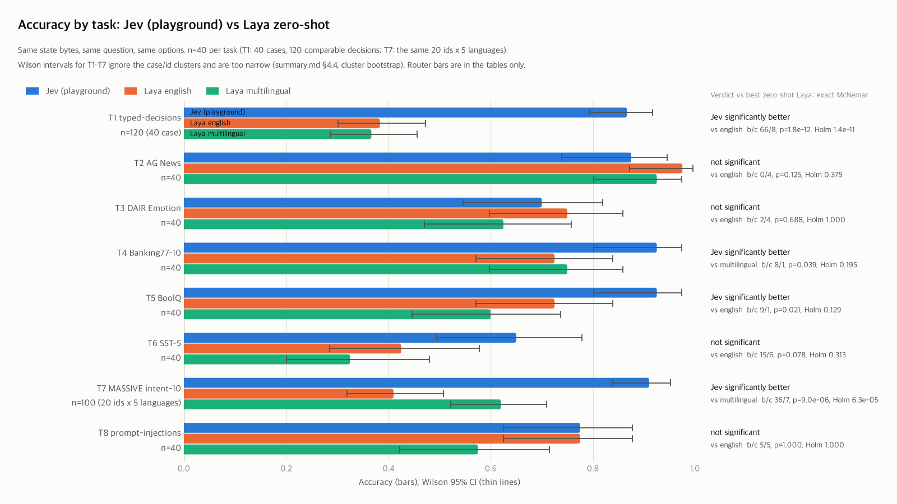
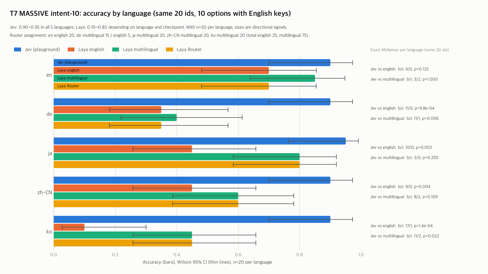
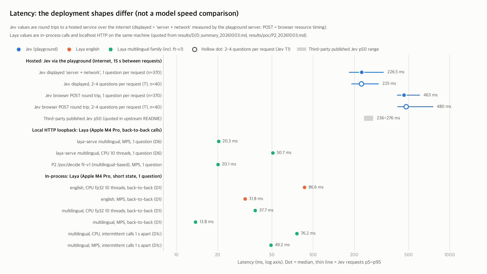
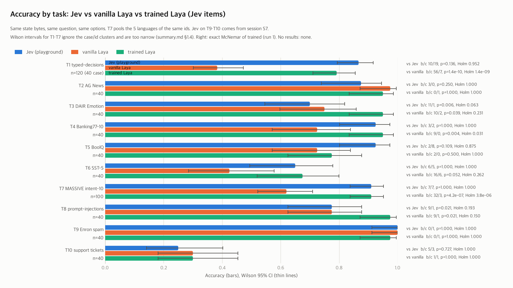
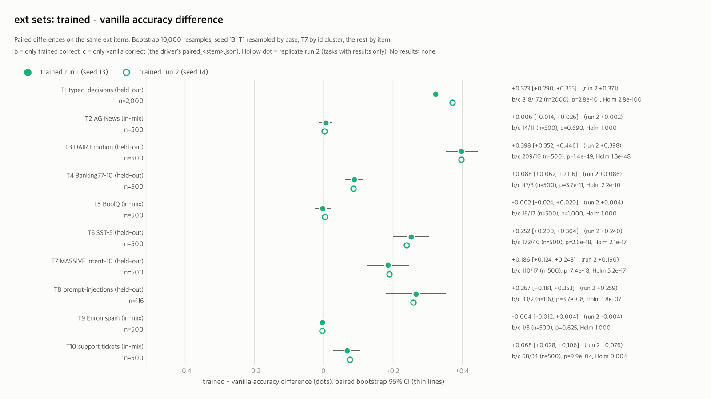
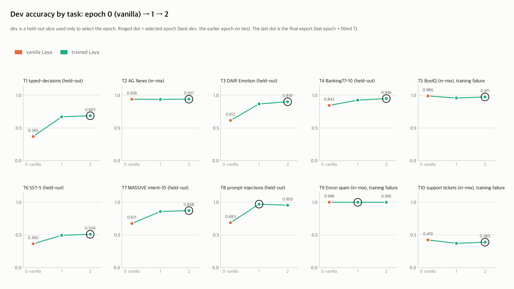
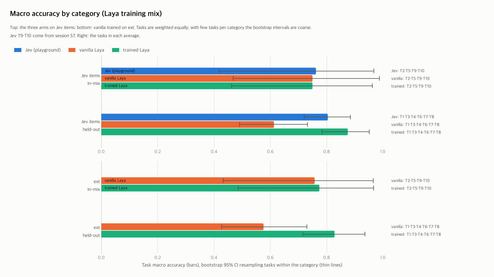

1. 요약
Go — 미달 없음 · 대기 없음 (00 §6 판정 규칙을 results/go_no_go.json에 적용)
laya-evals 리포트 234개 (B 46 · C 9 · D 5 · P4 14 · T3arm 122 · env 1 · korean_support 13 · poc 24) · 그 밖의 입력 파일은 10절 목록. smoke_full·metrics·dev 하위는 리포트 목록에서 제외.
환경과 pin
| 기록 | 2026-10-08T09:40:54+0900 · results/env/env_20261008-0940.json |
|---|---|
| 플랫폼 | macOS-26.6.2-arm64-arm-64bit · Python 3.12.12 |
| 버전 | laya 0.3.23 · torch 2.14.1 · transformers 5.18.0 · onnxruntime 1.30.0 |
| 디바이스 | MPS 가능 True · torch 스레드 intra 10 / inter 14 (스냅샷 시점 기본값) |
| LAYA_REVISION | reviewed |
| 체크포인트 laya | snapshot 55cf4c4ebb4e · weights sha256 891102d37268 |
| 체크포인트 laya-multilingual | snapshot 55cf4c4ebb4e · weights sha256 9d628fd971b7 |
| 체크포인트 laya-typed-decisions | snapshot 55cf4c4ebb4e · weights sha256 4fa56de72383 |
Laya vs Jev (주 결과)
Holm 보정 후: Jev 유의 우세 2 · 비유의 6 · Laya 유의 우세 0 (유의 T1, T7)
보정 전(과제별 α 0.05): Jev 유의 우세 4 · 비유의 4 · Laya 유의 우세 0
| 과제 | n | Laya 학습 믹스 | Jev [Wilson 95%] | Laya english | Laya multilingual | Laya Router | 최고 Laya | b / c | McNemar p | Holm p | 판정 | Holm 후 |
|---|---|---|---|---|---|---|---|---|---|---|---|---|
| T1 typed-decisions | 120 | no | 0.867 [0.794, 0.916] | 0.383 | 0.367 | 0.383 | english | 66 / 8 | 1.8e-12 | 1.4e-11 | ✗Jev 유의 우세 | ✗Jev 유의 우세 |
| T2 AG News | 40 | yes | 0.875 [0.739, 0.945] | 0.975 | 0.925 | 0.975 | english | 0 / 4 | 0.1250 | 0.3750 | –비유의 | –비유의 |
| T3 DAIR Emotion | 40 | no | 0.700 [0.546, 0.819] | 0.750 | 0.625 | 0.750 | english | 2 / 4 | 0.6875 | 1.0000 | –비유의 | –비유의 |
| T4 Banking77-10 | 40 | held out | 0.925 [0.801, 0.974] | 0.725 | 0.750 | 0.725 | multilingual | 8 / 1 | 0.0391 | 0.1953 | ✗Jev 유의 우세 | –비유의 |
| T5 BoolQ | 40 | yes | 0.925 [0.801, 0.974] | 0.725 | 0.600 | 0.725 | english | 9 / 1 | 0.0215 | 0.1289 | ✗Jev 유의 우세 | –비유의 |
| T6 SST-5 | 40 | no | 0.650 [0.495, 0.779] | 0.425 | 0.325 | 0.425 | english | 15 / 6 | 0.0784 | 0.3134 | –비유의 | –비유의 |
| T7 MASSIVE intent-10 x5 | 100 | held out | 0.910 [0.838, 0.952] | 0.410 | 0.620 | 0.580 | multilingual | 36 / 7 | 9.0e-06 | 6.3e-05 | ✗Jev 유의 우세 | ✗Jev 유의 우세 |
| T8 prompt-injections | 40 | no | 0.775 [0.625, 0.877] | 0.775 | 0.575 | 0.725 | english | 5 / 5 | 1.0000 | 1.0000 | –비유의 | –비유의 |
- macro 정확도(8과제 단순 평균): Jev 0.828 · english 0.646 · multilingual 0.598 · Router 0.661 · 과제별 최고 Laya 0.675. Jev − Router +0.167 [+0.044, +0.293] (과제 bootstrap 10,000회, 기술통계)
- 독립 단일 문항 240개 합산 exact McNemar(과제별 최고 Laya): Jev 194, Laya 176, b/c 39/21, p 0.0273
- 군집 bootstrap: T1 Jev − english +0.483 [+0.371, +0.597] · T7 Jev − multilingual +0.290 [+0.100, +0.470]
- Jev 지연: 표시값 'server + network' 중앙 226.0 ms, 브라우저 POST 중앙 465.0 ms(성공 410건, 인터넷 왕복 포함). Laya 로컬 지연은 그림 3. Jev 비용 1,000 decision당 $0.0197(제3자 인용 단가, 확인 필요)
- 참고선(zero-shot 아님): T1 typed-decisions 파인튜닝 체크포인트 104/120, Jev 대비 b/c 10/10, p 1.0000
- 사이트 요청 438회(2026-10-06 98, 2026-10-07 340), HTTP 502 2회, 429 0회



칩은 Laya 관점이다(✗ Jev 유의 우세, – 비유의, ✓ Laya 유의 우세). b는 Jev만 정답, c는 최고 Laya만 정답인 항목 수이고, 판정은 과제별 exact McNemar(양측 α 0.05), Holm 열은 8개 검정 보정이다. 학습 믹스는 upstream build_benchmark_nb.py:760-762 기준(no와 held out은 같은 뜻). 독립 플레이그라운드 경유(API 아님, 모델 버전 미표기, 확률 2자리 반올림), 과제당 n=40. 출처 results/F/jev_cmp/summary.md.
3-arm: Jev vs vanilla vs trained Laya
trained vs Jev, Holm 보정 후: trained 유의 우세 0 · 비유의 10 · Jev 유의 우세 0 (10과제)
보정 전(과제별 α 0.05): trained 유의 우세 2 · 비유의 8 · Jev 유의 우세 0 (trained 유의 우세 T3, T8). 아래 trained는 run 1(seed 13)이다. 판정은 seed 14 반복 학습(run 2)과 결론이 같은 것만 확정한다(run 2 결과 10/10과제: 확정 27 · 불일치 3 · 결과 없음 0, 판정 일치표). 상태 RUN_ALL FINISHED (results/T3arm/run_all_status.log), 결과 10/10과제, S3 2026-10-12 13:50.
Jev 항목 3-arm (Q2)
| 과제 | 범주 | n | Jev [Wilson 95%] | vanilla | trained | trained vs Jev b / c | McNemar p | Holm p | 판정 | Holm 후 | trained vs vanilla (Holm 후) | Jev vs vanilla (Holm 후) |
|---|---|---|---|---|---|---|---|---|---|---|---|---|
| T1 typed-decisions | 제외 | 120 | 0.867 [0.794, 0.916] | 0.383 [0.301, 0.473] | 0.792 [0.711, 0.855] | 10 / 19 | 0.1360 | 0.9523 | –비유의 | –비유의 | ✓trained 유의 우세 | ✗Jev 유의 우세 |
| T2 AG News | 포함 | 40 | 0.875 [0.739, 0.945] | 0.975 [0.871, 0.996] | 0.950 [0.835, 0.986] | 3 / 0 | 0.2500 | 1.0000 | –비유의 | –비유의 | –비유의 | –비유의 |
| T3 DAIR Emotion | 제외 | 40 | 0.700 [0.546, 0.819] | 0.750 [0.598, 0.858] | 0.950 [0.835, 0.986] | 11 / 1 | 0.0063 | 0.0635 | ✓trained 유의 우세 | –비유의 | –비유의 | –비유의 |
| T4 Banking77-10 | 제외 | 40 | 0.925 [0.801, 0.974] | 0.725 [0.572, 0.839] | 0.950 [0.835, 0.986] | 3 / 2 | 1.0000 | 1.0000 | –비유의 | –비유의 | ✓trained 유의 우세 | –비유의 |
| T5 BoolQ | 포함 | 40 | 0.925 [0.801, 0.974] | 0.725 [0.572, 0.839] | 0.775 [0.625, 0.877] | 2 / 8 | 0.1094 | 0.8750 | –비유의 | –비유의 | –비유의 | –비유의 |
| T6 SST-5 | 제외 | 40 | 0.650 [0.495, 0.779] | 0.425 [0.285, 0.578] | 0.675 [0.520, 0.799] | 6 / 5 | 1.0000 | 1.0000 | –비유의 | –비유의 | –비유의 | –비유의 |
| T7 MASSIVE intent-10 | 제외 | 100 | 0.910 [0.838, 0.952] | 0.620 [0.522, 0.709] | 0.910 [0.838, 0.952] | 7 / 7 | 1.0000 | 1.0000 | –비유의 | –비유의 | ✓trained 유의 우세 | ✗Jev 유의 우세 |
| T8 prompt-injections | 제외 | 40 | 0.775 [0.625, 0.877] | 0.775 [0.625, 0.877] | 0.975 [0.871, 0.996] | 9 / 1 | 0.0215 | 0.1934 | ✓trained 유의 우세 | –비유의 | –비유의 | –비유의 |
| T9 Enron spam | 포함 | 40 | 1.000 [0.912, 1.000] | 1.000 [0.912, 1.000] | 0.975 [0.871, 0.996] | 0 / 1 | 1.0000 | 1.0000 | –비유의 | –비유의 | –비유의 | –비유의 |
| T10 support tickets | 포함 | 40 | 0.250 [0.142, 0.402] | 0.300 [0.181, 0.454] | 0.300 [0.181, 0.454] | 5 / 3 | 0.7266 | 1.0000 | –비유의 | –비유의 | –비유의 | –비유의 |
ext: vanilla vs trained
| 과제 | 범주 | n | vanilla [Wilson 95%] | trained | trained − vanilla [bootstrap 95%] | b / c | McNemar p | Holm p | Holm 후 |
|---|---|---|---|---|---|---|---|---|---|
| T1 typed-decisions | 제외 | 2000 | 0.363 [0.343, 0.385] | 0.686 [0.666, 0.706] | +0.323 [+0.290, +0.355] | 818 / 172 | 2.8e-101 | 2.8e-100 | ✓trained 유의 우세 |
| T2 AG News | 포함 | 500 | 0.940 [0.916, 0.958] | 0.946 [0.923, 0.963] | +0.006 [-0.014, +0.026] | 14 / 11 | 0.6900 | 1.0000 | –비유의 |
| T3 DAIR Emotion | 제외 | 500 | 0.488 [0.444, 0.532] | 0.886 [0.855, 0.911] | +0.398 [+0.352, +0.446] | 209 / 10 | 1.4e-49 | 1.3e-48 | ✓trained 유의 우세 |
| T4 Banking77-10 | 제외 | 500 | 0.876 [0.844, 0.902] | 0.964 [0.944, 0.977] | +0.088 [+0.062, +0.116] | 47 / 3 | 3.7e-11 | 2.2e-10 | ✓trained 유의 우세 |
| T5 BoolQ | 포함 | 500 | 0.834 [0.799, 0.864] | 0.832 [0.797, 0.862] | -0.002 [-0.024, +0.020] | 16 / 17 | 1.0000 | 1.0000 | –비유의 |
| T6 SST-5 | 제외 | 500 | 0.338 [0.298, 0.381] | 0.590 [0.546, 0.632] | +0.252 [+0.200, +0.304] | 172 / 46 | 2.6e-18 | 2.1e-17 | ✓trained 유의 우세 |
| T7 MASSIVE intent-10 | 제외 | 500 | 0.692 [0.650, 0.731] | 0.878 [0.846, 0.904] | +0.186 [+0.124, +0.248] | 110 / 17 | 7.4e-18 | 5.2e-17 | ✓trained 유의 우세 |
| T8 prompt-injections | 제외 | 116 | 0.698 [0.609, 0.774] | 0.966 [0.915, 0.987] | +0.267 [+0.181, +0.353] | 33 / 2 | 3.7e-08 | 1.8e-07 | ✓trained 유의 우세 |
| T9 Enron spam | 포함 | 500 | 0.992 [0.980, 0.997] | 0.988 [0.974, 0.994] | -0.004 [-0.012, +0.004] | 1 / 3 | 0.6250 | 1.0000 | –비유의 |
| T10 support tickets | 포함 | 500 | 0.264 [0.227, 0.304] | 0.332 [0.292, 0.374] | +0.068 [+0.028, +0.106] | 68 / 34 | 9.9e-04 | 0.0039 | ✓trained 유의 우세 |
범주 집계 (Q1)
| 기준 | arm | 포함 macro [95%] | 포함 과제 | 제외 macro [95%] | 제외 과제 |
|---|---|---|---|---|---|
| Jev 항목 | Jev | 0.762 [0.419, 0.969] | T2·T5·T9·T10 | 0.804 [0.721, 0.885] | T1·T3·T4·T6·T7·T8 |
| Jev 항목 | vanilla | 0.750 [0.469, 0.988] | T2·T5·T9·T10 | 0.613 [0.491, 0.732] | T1·T3·T4·T6·T7·T8 |
| Jev 항목 | trained | 0.750 [0.462, 0.963] | T2·T5·T9·T10 | 0.875 [0.784, 0.952] | T1·T3·T4·T6·T7·T8 |
| ext | vanilla | 0.758 [0.433, 0.966] | T2·T5·T9·T10 | 0.576 [0.428, 0.730] | T1·T3·T4·T6·T7·T8 |
| ext | trained | 0.774 [0.485, 0.967] | T2·T5·T9·T10 | 0.828 [0.716, 0.937] | T1·T3·T4·T6·T7·T8 |
| 기준 | 차이 | 포함 평균 [95%] | 제외 평균 [95%] | 제외 − 포함 [95%] |
|---|---|---|---|---|
| Jev 항목 | Jev − vanilla | +0.013 [-0.075, +0.138] | +0.191 [+0.054, +0.330] | +0.179 [-0.008, +0.356] |
| Jev 항목 | trained − vanilla | +0.000 [-0.025, +0.031] | +0.262 [+0.212, +0.327] | +0.262 [+0.202, +0.333] |
| Jev 항목 | trained − Jev | -0.013 [-0.100, +0.062] | +0.071 [-0.017, +0.163] | +0.083 [-0.035, +0.215] |
| ext | trained − vanilla | +0.017 [-0.003, +0.051] | +0.252 [+0.171, +0.328] | +0.235 [+0.147, +0.316] |
- ext trained vs vanilla (Holm 후): 학습 제외 과제 6/6 유의 상승, 포함 과제 1/4 유의 상승(T10)
- Q1 difference-in-differences (Jev 항목, Jev − vanilla): +0.179 [-0.008, +0.356]. ext 학습 이득(trained − vanilla)의 제외 − 포함은 +0.235 [+0.147, +0.316]
- 비용(Q3): 과제당 라벨 6,400개(T1 6,000, T6 6,100, T8 544), M4 Pro MPS fp32 학습 loop 과제당 1.4분(T8)-43.3분(T9), 체크포인트 english 0.85 GB, multilingual 0.68 GB
- 같은 설정 T1 재학습 편차: test 정확도(label 기준) 준비 V2(b) 0.747 대 본 학습 0.690, 짝 비교 b/c 217/98, exact McNemar p 1.7e-11, 차이(argmax gold) +0.059 [+0.040, +0.081](case 군집 bootstrap). micro-batch 손실이 12번에서 처음 갈라진다(MPS 비결정성). 그래서 trained 수치는 과제당 run 하나의 표본이다
- 주의할 진단: 옵션 순서 flip이 가장 높은 과제는 T10(0.175 [0.105, 0.250]), train − dev가 가장 큰 과제는 T6(0.142)
- T10 라벨 점검: 4개 시스템(Jev, vanilla english, vanilla multilingual, trained)이 모두 틀린 행 18/40. 라벨 품질 의심, 수작업 확인 필요
보정 분리: refit 효과와 학습 효과
| 과제 | Jev 항목 ECE: refit / 학습 | Jev 항목 Brier: refit / 학습 | ext ECE: refit / 학습 | ext Brier: refit / 학습 | temperature clamp (fit → 로드) |
|---|---|---|---|---|---|
| T1 typed-decisions | -0.076 / +0.051 | -0.067 / -0.303 | -0.138 / +0.077 | -0.064 / -0.250 | choice 7.613 → 5.000, noul 10.000 → 5.000 |
| T2 AG News | -0.019 / -0.052 | -0.002 / +0.043 | -0.012 / -0.006 | +0.000 / +0.001 | 없음 |
| T3 DAIR Emotion | +0.034 / -0.135 | -0.002 / -0.334 | -0.336 / +0.002 | -0.228 / -0.470 | 없음 |
| T4 Banking77-10 | +0.005 / -0.143 | -0.012 / -0.265 | +0.004 / -0.063 | +0.001 / -0.151 | 없음 |
| T5 BoolQ | +0.039 / -0.039 | +0.054 / -0.036 | +0.055 / -0.010 | +0.035 / +0.003 | 없음 |
| T6 SST-5 | -0.127 / +0.041 | -0.084 / -0.226 | -0.226 / -0.013 | -0.139 / -0.194 | 없음 |
| T7 MASSIVE intent-10 | -0.133 / -0.009 | -0.060 / -0.352 | -0.093 / -0.045 | -0.054 / -0.240 | 없음 |
| T8 prompt-injections | -0.055 / -0.147 | -0.065 / -0.302 | -0.055 / -0.173 | -0.087 / -0.382 | noul 10.000 → 5.000 |
| T9 Enron spam | -0.010 / +0.022 | -0.004 / +0.029 | +0.000 / -0.001 | +0.000 / +0.003 | 없음 |
| T10 support tickets | -0.091 / +0.022 | -0.042 / +0.019 | -0.113 / -0.034 | -0.050 / -0.045 | 없음 |
refit 효과 = (vanilla + 과제 T) − vanilla, 학습 효과 = trained − (vanilla + 과제 T)이고 음수면 그 지표가 낮아진(좋아진) 것이다. vanilla + 과제 T는 base 가중치에 그 과제 calib로 맞춘 temperature만 넣은 0-step export라 답이 vanilla와 같다(argmax 일치 6,735/6,736, 반올림 동률 포함 6,736/6,736, 정답 여부 6,736/6,736). clamp는 fit 값을 laya가 로드 때 자른 값이다.
학습 검증 (Q4)
| 검증 | 핵심 수치 | 판정 |
|---|---|---|
| V1 zero-step identity | 텐서 값 english 206/206, multilingual 170/170 동일, argmax 40/40, 20/20. refit만으로 ECE english 0.083 → 0.064, multilingual 0.365 → 0.179 | ✓통과 |
| V2 upstream 재현 | (a) upstream 체크포인트 0.766 (공개 0.766, ±0.02) (b) 우리 학습 0.747 (기준 ≥ 0.562, majority 0.461) | ✓통과 |
| V3 label-shuffle | 실제 라벨 epoch 1 0.864 − permuted 0.385 = +0.479 (기준 ≥ 0.30), permuted < vanilla 0.612. 엄격 기준(permuted ≤ majority + 0.05 = 0.346)은 +0.039 미달 | ✓통과 (사용자 판정 2026-10-08) |
| V4 형식 동일성 | 10과제, 추론 시퀀스·토큰 일치 250/250, 옵션 decode·target 점검 49,084 items | ✓통과 |
| V5 smoke | english 3.95, multilingual 20.14 items/s. 드라이버 SMOKE STEP OK 163, FAILED 0 | ✓통과 |
| V6 누수 | 10과제 train·dev·calib와 평가 텍스트의 교집합 정확 0 / 정규화 0. 추출 전 제거 T3 1, T7 24 | ✓통과 |
| 과제 | base | dev epoch 0 (vanilla) | epoch 1 | epoch 2 | 선택 epoch | train − dev | flip dev40 [95%] | 학습 실패 표시 | 원인 (파이프라인 실패 아님) |
|---|---|---|---|---|---|---|---|---|---|
| T1 typed-decisions | english | 0.365 | 0.667 | 0.683 | 2 | +0.054 | 0.031 [0.000, 0.069] | 아니오 | |
| T2 AG News | english | 0.936 | 0.934 | 0.937 | 2 | +0.027 | 0.005 [0.000, 0.015] | 아니오 | |
| T3 DAIR Emotion | english | 0.612 | 0.864 | 0.897 | 2 | +0.034 | 0.015 [0.000, 0.040] | 아니오 | |
| T4 Banking77-10 | english | 0.842 | 0.922 | 0.946 | 2 | +0.013 | 0.035 [0.000, 0.095] | 아니오 | |
| T5 BoolQ | english | 0.986 | 0.955 | 0.971 | 2 | +0.009 | choice 아님 | ◐예 | dev 기준선 오염: dev가 upstream 학습 믹스인 BoolQ의 train split이라 vanilla dev가 부풀었다 |
| T6 SST-5 | english | 0.360 | 0.490 | 0.506 | 2 | +0.142 | choice 아님 | 아니오 | |
| T7 MASSIVE intent-10 | multilingual | 0.671 | 0.854 | 0.868 | 2 | +0.069 | 0.010 [0.000, 0.025] | 아니오 | |
| T8 prompt-injections | english | 0.683 | 0.967 | 0.950 | 1 (재보정) | +0.033 | choice 아님 | 아니오 | |
| T9 Enron spam | english | 0.996 | 0.995 | 0.995 | 1 (재보정) | -0.001 | choice 아님 | ◐예 | 천장 효과: vanilla가 이미 천장이고 dev 차이는 1,000행 중 1행 |
| T10 support tickets | english | 0.419 | 0.367 | 0.385 | 2 | +0.083 | 0.175 [0.105, 0.250] | ◐예 | dev 라벨 분포 불일치: dev는 자연 분포, train·ext는 균등에 가깝다 |
반복 학습 판정 일치표 (run 1 seed 13, run 2 seed 14)
run 2 결과 10/10과제(T1·T2·T3·T4·T5·T6·T7·T8·T9·T10), 상태 RUN_ALL FINISHED (results/T3arm/rep_s14/run_all_status.log). 결론: 확정 27 · 불일치 3 · 결과 없음 0 (비교 30개).
| 과제 | 비교 | run 1 판정 (Holm p) | run 2 판정 (Holm p) | 결론 |
|---|---|---|---|---|
| T1 typed-decisions | Jev 항목 trained vs Jev | 비유의 (0.9523) | 비유의 (1.0000) | ✓확정 |
| T1 typed-decisions | Jev 항목 trained vs vanilla | trained 유의 우세 (1.4e-09) | trained 유의 우세 (1.3e-11) | ✓확정 |
| T1 typed-decisions | ext trained vs vanilla | trained 유의 우세 (2.8e-100) | trained 유의 우세 (1.6e-128) | ✓확정 |
| T2 AG News | Jev 항목 trained vs Jev | 비유의 (1.0000) | 비유의 (0.7500) | ✓확정 |
| T2 AG News | Jev 항목 trained vs vanilla | 비유의 (1.0000) | 비유의 (1.0000) | ✓확정 |
| T2 AG News | ext trained vs vanilla | 비유의 (1.0000) | 비유의 (1.0000) | ✓확정 |
| T3 DAIR Emotion | Jev 항목 trained vs Jev | 비유의 (0.0635) | 비유의 (0.1797) | ✓확정 |
| T3 DAIR Emotion | Jev 항목 trained vs vanilla | 비유의 (0.2314) | 비유의 (0.3271) | ✓확정 |
| T3 DAIR Emotion | ext trained vs vanilla | trained 유의 우세 (1.3e-48) | trained 유의 우세 (1.3e-48) | ✓확정 |
| T4 Banking77-10 | Jev 항목 trained vs Jev | 비유의 (1.0000) | 비유의 (1.0000) | ✓확정 |
| T4 Banking77-10 | Jev 항목 trained vs vanilla | trained 유의 우세 (0.0312) | 비유의 (0.0547) | ✗불일치 |
| T4 Banking77-10 | ext trained vs vanilla | trained 유의 우세 (2.2e-10) | trained 유의 우세 (4.2e-09) | ✓확정 |
| T5 BoolQ | Jev 항목 trained vs Jev | 비유의 (0.8750) | 비유의 (0.1055) | ✓확정 |
| T5 BoolQ | Jev 항목 trained vs vanilla | 비유의 (1.0000) | 비유의 (1.0000) | ✓확정 |
| T5 BoolQ | ext trained vs vanilla | 비유의 (1.0000) | 비유의 (1.0000) | ✓확정 |
| T6 SST-5 | Jev 항목 trained vs Jev | 비유의 (1.0000) | 비유의 (1.0000) | ✓확정 |
| T6 SST-5 | Jev 항목 trained vs vanilla | 비유의 (0.2624) | 비유의 (0.0709) | ✓확정 |
| T6 SST-5 | ext trained vs vanilla | trained 유의 우세 (2.1e-17) | trained 유의 우세 (3.4e-15) | ✓확정 |
| T7 MASSIVE intent-10 | Jev 항목 trained vs Jev | 비유의 (1.0000) | 비유의 (1.0000) | ✓확정 |
| T7 MASSIVE intent-10 | Jev 항목 trained vs vanilla | trained 유의 우세 (3.8e-06) | trained 유의 우세 (4.2e-05) | ✓확정 |
| T7 MASSIVE intent-10 | ext trained vs vanilla | trained 유의 우세 (5.2e-17) | trained 유의 우세 (1.7e-18) | ✓확정 |
| T8 prompt-injections | Jev 항목 trained vs Jev | 비유의 (0.1934) | trained 유의 우세 (0.0391) | ✗불일치 |
| T8 prompt-injections | Jev 항목 trained vs vanilla | 비유의 (0.1504) | trained 유의 우세 (0.0312) | ✗불일치 |
| T8 prompt-injections | ext trained vs vanilla | trained 유의 우세 (1.8e-07) | trained 유의 우세 (7.7e-08) | ✓확정 |
| T9 Enron spam | Jev 항목 trained vs Jev | 비유의 (1.0000) | 비유의 (1.0000) | ✓확정 |
| T9 Enron spam | Jev 항목 trained vs vanilla | 비유의 (1.0000) | 비유의 (1.0000) | ✓확정 |
| T9 Enron spam | ext trained vs vanilla | 비유의 (1.0000) | 비유의 (1.0000) | ✓확정 |
| T10 support tickets | Jev 항목 trained vs Jev | 비유의 (1.0000) | 비유의 (0.6460) | ✓확정 |
| T10 support tickets | Jev 항목 trained vs vanilla | 비유의 (1.0000) | 비유의 (0.5000) | ✓확정 |
| T10 support tickets | ext trained vs vanilla | trained 유의 우세 (0.0039) | trained 유의 우세 (0.0015) | ✓확정 |
확정 = 두 run의 Holm 후 판정이 같음. run 2의 Holm은 run 2에 결과 있는 과제끼리 따로 했다. vanilla·Jev·vanilla + 과제 T는 학습이 없어 두 run에 같다.
사용자 결정과 후속 작업 (2026-10-08 15:25)
| 항목 | 결정 | 상태 | 결과 | 출력 |
|---|---|---|---|---|
| V3 판정 | 통과(차이 기준). 엄격 기준 미달은 계획과의 편차로 기록 | ✓해결 | 학습 검증 표에 반영 | |
| T8 분할 | hold-out(dev·calib를 train에서 뗌) 유지, 2 epoch | ✓해결 | 본 학습에 적용 | |
| 보정 분리 열 (vanilla + 과제 T) | 추가. 과제마다 0-step export(base 가중치 + 과제 calib T)를 Jev 항목과 ext로 평가 | ✓해결 | 보정 분리 표에 반영 | results/T3arm/calib_sep/ |
| 반복 학습 | seed 14로 10과제를 1회 더. 판정은 두 run의 결론이 같을 때만 확정 | ✓해결 | 판정 일치표에 반영 | results/T3arm/rep_s14/ |
| T9·T10 Jev 측정 (80 요청) | 승인. 기존 플레이그라운드 운영 규칙 | ✓해결 | 세션 S7, Jev 칸에 반영 | results/F/jev_cmp/sessions/S7_20261008/ |




칩은 Laya arm 관점이다(✓ trained 유의 우세, Jev vs vanilla 열은 vanilla 유의 우세 · – 비유의 · ✗ 상대 arm 유의 우세). b는 앞 arm만, c는 뒤 arm만 정답인 항목 수이고 판정은 exact McNemar(양측 α 0.05), Holm은 family마다(trained vs Jev 10과제, trained vs vanilla 10과제, Jev vs vanilla 10과제). ext 차이는 paired bootstrap(T1 case, T7 id 군집). 범주 구간은 과제 재표본이라 기술통계다. trained는 과제 라벨로 학습한 전문화 비교이고 ECE·Brier에는 temperature refit 효과가 섞인다(V1, 보정 분리 표). Jev는 독립 플레이그라운드 경유이고 T9·T10은 세션 S7(results/F/jev_cmp/sessions/S7_20261008) 기록이다. 학습 실패 표시는 모든 epoch의 dev가 epoch 0보다 낮음(docs/11 §4). 출처 results/T3arm/summary.md · results/T3arm/PREP_20261008.md · docs/11_three_arm_plan.md.
2. Track A 재현
| 언어 | 체크포인트 | upstream acc | 측정 acc | Δ acc | 판정 | upstream ECE | 측정 ECE | Δ ECE | 판정 | 리포트 |
|---|---|---|---|---|---|---|---|---|---|---|
| ko | multilingual | 0.470 | 0.470 | +0.000 | ✓±0.03 이내 | 0.311 | 0.311 | +0.000 | ✓±0.03 이내 | K2_intent20_ko_multilingual |
| ko | english | 0.110 | 0.110 | +0.000 | ✓±0.03 이내 | 0.680 | 0.680 | +0.000 | ✓±0.03 이내 | K2_intent20_ko_english |
| en | multilingual | 0.710 | 0.710 | +0.000 | ✓±0.03 이내 | 0.233 | 0.233 | +0.000 | ✓±0.03 이내 | K2_intent20_en_multilingual |
| en | english | 0.820 | 0.820 | +0.000 | ✓±0.03 이내 | 0.138 | 0.138 | +0.000 | ✓±0.03 이내 | K2_intent20_en_english |
MASSIVE intent 20옵션, 첫 100행, seed 13, CPU fp32 (03 §5 A2/A3). upstream: BENCHMARKS.md §Languages (ko :71, en :117). 기록 A/README.md. A1 fixture: env/smoke_fixture_english_cpu.json.
3. Track D 성능
–미측정 D1~D8(지연 행렬, 스레드 스윕, cold load, 배칭, HTTP 부하, ONNX, 메모리)은 머신 단독 조건이 갖춰질 때까지 대기다. 아래는 스모크·P0 참고값이며 정식 측정(≥10회, p95)이 아니므로 G5·G6·H8~H10 판정에 쓰지 않는다.
| 출처 | 구성 | 질문 수 | 디바이스 | median ms | 비고 |
|---|---|---|---|---|---|
| 스모크 3.5 example 35 | multilingual | 3 | CPU | 48.0 | median of 3, warm-up 1 |
| 스모크 3.5 example 35 | multilingual | 3 | MPS | 19.3 | median of 3, warm-up 1 |
| 스모크 3.6 upstream smoke | english | 4 | CPU | 146 | median of 3, 스레드 10/14 |
| 스모크 3.6 upstream smoke | multilingual | 4 | CPU | 61 | median of 3, 스레드 10/14 |
| 스모크 3.6 upstream smoke | typed-decisions | 4 | CPU | 147 | median of 3, 스레드 10/14 |
| 스모크 3.6 upstream smoke | english | 4 | MPS | 63 | median of 3, 스레드 10/14 |
| 스모크 3.6 upstream smoke | multilingual | 4 | MPS | 23 | median of 3, 스레드 10/14 |
| 스모크 3.6 upstream smoke | typed-decisions | 4 | MPS | 62 | median of 3, 스레드 10/14 |
| P0 SDK | multilingual · MPS fp16 | 7 | MPS | 73.83 | min–max 73.11–75.18 ms, n=10, warm-up 3 |
| P0 SDK | multilingual · MPS fp32 대조 | 7 | MPS | 69.81 | min–max 69.33–70.5 ms, n=10, warm-up 3 |
| P0 SDK | multilingual · CPU fp32 | 7 | CPU | 145.88 | min–max 143.88–148.34 ms, n=10, warm-up 3 |
| 스모크 3.7 laya-serve | HTTP /v1/systemone, preload | 1 | MPS | 17.6 | curl time_total, 이후 5회 중앙값 |
4. Track B 한국어 품질
세트 × 러너 정확도 [95% bootstrap CI], split all
| 세트 | qid | n | majority | english | multilingual | typed-decisions | Router | multilingual dev | multilingual test |
|---|---|---|---|---|---|---|---|---|---|
| ko_massive_domain_8 | domain | 500 | 0.126 | 0.262 [0.226, 0.300] | 0.526 [0.486, 0.568] | 0.288 [0.248, 0.326] | 0.526 [0.486, 0.568] | 0.560 [0.500, 0.620] | 0.492 [0.432, 0.552] |
| ko_klue_ynat_7 | topic | 500 | 0.144 | 0.216 [0.180, 0.252] | 0.634 [0.590, 0.674] | 0.234 [0.198, 0.270] | 0.634 [0.590, 0.674] | 0.612 [0.547, 0.673] | 0.655 [0.600, 0.710] |
| ko_massive_scenario_18 | scenario | 100 | 0.210 | 0.310 [0.220, 0.400] | 0.520 [0.430, 0.620] | 0.330 [0.240, 0.430] | 0.520 [0.430, 0.620] | 0.551 [0.429, 0.694] | 0.490 [0.353, 0.627] |
| ko_massive_intent_20opt | intent | 100 | 0.170 | 0.110 [0.050, 0.170] | 0.470 [0.380, 0.570] | 0.060 [0.020, 0.110] | 0.470 [0.380, 0.570] | — | — |
| ko_klue_nli_3 | relation | 500 | 0.334 | 0.448 [0.402, 0.492] | 0.750 [0.712, 0.786] | 0.496 [0.452, 0.540] | 0.750 [0.712, 0.786] | — | — |
| ko_nsmc_sentiment | sentiment_noul | 500 | 0.500 | 0.516 [0.472, 0.560] | 0.638 [0.598, 0.678] | 0.532 [0.486, 0.578] | 0.640 [0.598, 0.682] | — | — |
| ko_nsmc_sentiment | sentiment_choice | 500 | 0.500 | 0.528 [0.484, 0.570] | 0.774 [0.736, 0.810] | 0.506 [0.462, 0.546] | 0.776 [0.740, 0.812] | — | — |
| ko_kmhas_hate | is_hate | 500 | 0.500 | 0.500 [0.458, 0.542] | 0.582 [0.542, 0.624] | 0.500 [0.458, 0.542] | 0.582 [0.542, 0.624] | — | — |
| ko_kmhas_type_8 | hate_type | 500 | 0.144 | 0.146 [0.118, 0.178] | 0.394 [0.350, 0.436] | 0.180 [0.148, 0.216] | 0.394 [0.350, 0.436] | — | — |
| ko_3i4k_speechact_7 | speech_act | 500 | 0.144 | 0.174 [0.144, 0.206] | 0.178 [0.146, 0.212] | 0.162 [0.130, 0.196] | 0.178 [0.146, 0.212] | — | — |
| en_massive_domain_8 | domain | 500 | 0.126 | 0.446 [0.404, 0.490] | 0.510 [0.468, 0.552] | — | — | — | — |
| en_massive_intent_20opt | intent | 100 | 0.170 | 0.820 [0.740, 0.890] | 0.710 [0.620, 0.800] | 0.820 [0.740, 0.890] | — | — | — |
CPU fp32, 1000 resample. dev/test는 index parity 또는 state sha256 분할(results/B/B_splits.json). G1 입력은 ko_massive_domain_8 test. english·typed-decisions의 한국어 설명은 옵션당 22~30토큰에서 잘린다(B_head_budget.md). ablation 변형(dev 전용)은 10절 목록.
ECE (15 bins, as-shipped) [CI]
| 세트 | qid | english | multilingual | typed-decisions | Router |
|---|---|---|---|---|---|
| ko_massive_domain_8 | domain | 0.082 [0.059, 0.120] | 0.229 [0.197, 0.271] | 0.068 [0.046, 0.104] | 0.229 [0.197, 0.271] |
| ko_klue_ynat_7 | topic | 0.274 [0.238, 0.307] | 0.172 [0.144, 0.217] | 0.080 [0.062, 0.124] | 0.172 [0.144, 0.217] |
| ko_massive_scenario_18 | scenario | 0.403 [0.343, 0.503] | 0.250 [0.189, 0.352] | 0.112 [0.104, 0.236] | 0.250 [0.189, 0.352] |
| ko_massive_intent_20opt | intent | 0.680 [0.611, 0.753] | 0.311 [0.242, 0.403] | 0.506 [0.450, 0.561] | 0.311 [0.242, 0.403] |
| ko_klue_nli_3 | relation | 0.215 [0.177, 0.260] | 0.196 [0.164, 0.233] | 0.086 [0.060, 0.133] | 0.196 [0.164, 0.233] |
| ko_nsmc_sentiment | sentiment_noul | 0.325 [0.283, 0.371] | 0.289 [0.254, 0.331] | 0.105 [0.075, 0.155] | 0.287 [0.251, 0.329] |
| ko_nsmc_sentiment | sentiment_choice | 0.203 [0.173, 0.254] | 0.134 [0.106, 0.173] | 0.155 [0.120, 0.202] | 0.132 [0.102, 0.170] |
| ko_kmhas_hate | is_hate | 0.454 [0.413, 0.496] | 0.275 [0.239, 0.319] | 0.282 [0.240, 0.325] | 0.275 [0.239, 0.319] |
| ko_kmhas_type_8 | hate_type | 0.432 [0.398, 0.468] | 0.403 [0.362, 0.444] | 0.145 [0.113, 0.180] | 0.403 [0.362, 0.444] |
| ko_3i4k_speechact_7 | speech_act | 0.178 [0.142, 0.212] | 0.353 [0.317, 0.391] | 0.052 [0.025, 0.082] | 0.353 [0.317, 0.391] |
| en_massive_domain_8 | domain | 0.044 [0.043, 0.094] | 0.279 [0.244, 0.321] | — | — |
| en_massive_intent_20opt | intent | 0.138 [0.082, 0.215] | 0.233 [0.177, 0.329] | 0.093 [0.060, 0.159] | — |
ECE percentile CI는 위로 편향되어 점추정이 하한 아래에 놓일 수 있다(지표성).
Router auto: 답한 체크포인트(case 기준)와 multilingual 고정 대비 parity
| 세트 | cases | 체크포인트 분포 | multilingual 비율 | flips | max |Δp| |
|---|---|---|---|---|---|
| ko_massive_domain_8 | 500 | multilingual 500 | 1.000 | 0 | 0.0000 |
| ko_klue_ynat_7 | 500 | multilingual 500 | 1.000 | 0 | 0.0000 |
| ko_massive_scenario_18 | 100 | multilingual 100 | 1.000 | 0 | 0.0000 |
| ko_massive_intent_20opt | 100 | multilingual 100 | 1.000 | 0 | 0.0000 |
| ko_klue_nli_3 | 500 | multilingual 500 | 1.000 | 0 | 0.0000 |
| ko_nsmc_sentiment | 1000 | english 4, multilingual 996 | 0.996 | 2 | 0.9274 |
| ko_kmhas_hate | 500 | multilingual 500 | 1.000 | 0 | 0.0000 |
| ko_kmhas_type_8 | 500 | english 1, multilingual 499 | 0.998 | 0 | 0.0270 |
| ko_3i4k_speechact_7 | 500 | multilingual 500 | 1.000 | 0 | 0.0000 |
한국어 페널티: 같은 MASSIVE id의 ko vs en (multilingual)
| 비교 | split | n | acc ko | acc en | Δ = en − ko [95% Wald] | McNemar p |
|---|---|---|---|---|---|---|
| domain_8 ko → en | all | 500 | 0.526 | 0.510 | -0.016 [-0.054, +0.022] | 0.4657 |
| domain_8 ko → en | dev | 250 | 0.560 | 0.476 | -0.084 [-0.137, -0.031] | 0.0031 |
| domain_8 ko → en | test | 250 | 0.492 | 0.544 | +0.052 [+0.000, +0.104] | 0.0725 |
| intent-20 ko → en (n=100, 참고) | all | 100 | 0.470 | 0.710 | +0.240 [+0.129, +0.351] | 1.2e-04 |
| intent-20 ko → en (n=100, 참고) | dev | 50 | 0.480 | 0.640 | +0.160 [+0.000, +0.320] | 0.0963 |
| intent-20 ko → en (n=100, 참고) | test | 50 | 0.460 | 0.780 | +0.320 [+0.169, +0.471] | 4.0e-04 |
Δ가 0 근처면 페널티 없음. 한국어 서술형 설명(domain_8)에서는 페널티가 없고, 영어 key 렌더링(intent-20)에서 크다.
5. Track C 견고성
| 세트 | split | n | 옵션 | 원 순서 acc | per-perm flip [CI] | any-flip [CI] | conf ≥ 0.9 flip | conf ≥ 0.9 n | G4 | H5 (0.10–0.30) |
|---|---|---|---|---|---|---|---|---|---|---|
| ko_massive_domain_8 | dev | 250 | 8 | 0.560 | 0.270 [0.230, 0.310] | 0.512 [0.452, 0.572] | 0.094 | 108 | ✗> 0.10 | ✓범위 안 |
| ko_klue_ynat_7 | dev | 245 | 7 | 0.612 | 0.168 [0.135, 0.206] | 0.318 [0.261, 0.376] | 0.024 | 110 | ✗> 0.10 | ✓범위 안 |
| ko_massive_scenario_18 | dev | 49 | 18 | 0.551 | 0.241 [0.159, 0.327] | 0.469 [0.327, 0.612] | 0.027 | 22 | ✗> 0.10 | ✓범위 안 |
router schema v2 (domain_8 dev 250, v1 대비 같은 행)
| 변형 | 옵션 | n | accuracy [CI] | Δ vs v1 | McNemar p | smart_home 예측 (gold) | ECE |
|---|---|---|---|---|---|---|---|
| v1 | 8 | 250 | 0.560 [0.500, 0.620] | +0.000 | 1.0000 | 66 (30) | 0.200 |
| v2a | 8 | 250 | 0.536 [0.476, 0.596] | -0.024 | 0.4050 | 70 (30) | 0.182 |
| v2b | 7 | 220 | 0.545 [0.482, 0.609] | -0.041 | 0.1877 | 84 (30) | 0.224 |
| v2c | 8 | 250 | 0.540 [0.476, 0.600] | -0.020 | 0.5327 | 44 (30) | 0.199 |
| v2c_h512 | 8 | 250 | 0.408 [0.348, 0.464] | -0.152 | 2.6e-07 | 114 (30) | 0.333 |
| v2d | 8 | 250 | 0.516 [0.456, 0.576] | -0.044 | 0.1352 | 60 (30) | 0.211 |
| v2e | 5 | 220 | 0.536 [0.468, 0.605] | -0.050 | 0.2604 | 78 (30) | 0.213 |
선택: v1 유지 (dev 순위 v2c, v2a, v2d, v1을 넘는 변형 없음). v2b·v2e는 general 제외 220행. 선택과 측정이 같은 dev 절반이라 낙관 편향. 출처 C/C_schema_v2_20261002.json
parity 근거 (C9 전 세트 디바이스 parity는 미측정)
| 비교 | n (문항) | argmax 일치 | max |Δp| | 출처 |
|---|---|---|---|---|
| 단일 state predict_batch vs laya-evals batch 16 · ko_massive_domain_8 | 250 | 250/250 | 0.0001 | C1 |
| 단일 state predict_batch vs laya-evals batch 16 · ko_klue_ynat_7 | 245 | 245/245 | 0.0001 | C1 |
| 단일 state predict_batch vs laya-evals batch 16 · ko_massive_scenario_18 | 49 | 49/49 | 0.0001 | C1 |
| MPS fp16 vs CPU fp32 (P0 한 문장) | 7 | 7/7 | 0.0017 | P0 SDK |
| MPS fp32 vs CPU fp32 (P0 한 문장) | 7 | 7/7 | 0.0000 | P0 SDK |
–미측정 C2 wording 사다리 · C3 noul vs 중립 키 2-choice(H6) · C4 부정문(H7, ko_negation_probe 미구축) · C6 고카디널리티(intent-60).
6. Track E 캘리브레이션
reliability diagram: ko_massive_domain_8 test
표로 보기 (bin별 n / conf / acc)
| bin | 전 n | 전 conf | 전 acc | 후 n | 후 conf | 후 acc |
|---|---|---|---|---|---|---|
| (0.133, 0.200] | 1 | 0.169 | 0.000 | 7 | 0.184 | 0.143 |
| (0.200, 0.267] | 6 | 0.252 | 0.167 | 24 | 0.235 | 0.125 |
| (0.267, 0.333] | 12 | 0.300 | 0.167 | 29 | 0.299 | 0.172 |
| (0.333, 0.400] | 13 | 0.363 | 0.077 | 29 | 0.365 | 0.241 |
| (0.400, 0.467] | 12 | 0.425 | 0.167 | 17 | 0.433 | 0.471 |
| (0.467, 0.533] | 17 | 0.509 | 0.294 | 13 | 0.505 | 0.308 |
| (0.533, 0.600] | 16 | 0.568 | 0.312 | 18 | 0.566 | 0.278 |
| (0.600, 0.667] | 20 | 0.631 | 0.150 | 13 | 0.639 | 0.462 |
| (0.667, 0.733] | 6 | 0.692 | 0.167 | 18 | 0.704 | 0.667 |
| (0.733, 0.800] | 7 | 0.762 | 0.571 | 14 | 0.765 | 0.643 |
| (0.800, 0.867] | 17 | 0.838 | 0.294 | 7 | 0.839 | 0.857 |
| (0.867, 0.933] | 19 | 0.898 | 0.368 | 21 | 0.898 | 0.857 |
| (0.933, 1.000] | 104 | 0.985 | 0.837 | 40 | 0.968 | 0.975 |
coverage@accuracy: ko_massive_domain_8 test
표로 보기 (T별 coverage / covered 정확도)
| T | 전 coverage | 전 acc | 후 coverage | 후 acc |
|---|---|---|---|---|
| 0.50 | 0.796 | 0.583 | 0.552 | 0.696 |
| 0.55 | 0.740 | 0.595 | 0.504 | 0.738 |
| 0.60 | 0.692 | 0.618 | 0.452 | 0.796 |
| 0.65 | 0.624 | 0.673 | 0.420 | 0.829 |
| 0.70 | 0.592 | 0.696 | 0.372 | 0.860 |
| 0.75 | 0.580 | 0.703 | 0.312 | 0.910 |
| 0.80 | 0.560 | 0.707 | 0.272 | 0.926 |
| 0.85 | 0.516 | 0.736 | 0.252 | 0.937 |
| 0.90 | 0.448 | 0.804 | 0.204 | 0.980 |
| 0.95 | 0.384 | 0.833 | 0.128 | 0.969 |
| 0.99 | 0.260 | 0.923 | 0.020 | 1.000 |
| 조건 | 오류 예산 | T (dev) | dev cov | dev err | test cov | test err | test oracle cov | oracle T |
|---|---|---|---|---|---|---|---|---|
| as-shipped | 5% | 0.9941 | 0.184 | 0.043 | 0.232 | 0.069 | 0.216 | 0.9951 |
| as-shipped | 10% | 0.9720 | 0.284 | 0.099 | 0.300 | 0.093 | 0.304 | 0.9711 |
| as-shipped | 15% | 0.9471 | 0.340 | 0.141 | 0.392 | 0.173 | 0.376 | 0.9580 |
| refit pooled | 5% | 0.8799 | 0.180 | 0.044 | 0.224 | 0.036 | 0.228 | 0.8765 |
| refit pooled | 10% | 0.7538 | 0.280 | 0.100 | 0.308 | 0.091 | 0.312 | 0.7525 |
| refit pooled | 15% | 0.6657 | 0.348 | 0.149 | 0.400 | 0.160 | 0.384 | 0.6818 |
T 표 (dev 절반 fit, test 절반 평가)
| fit | dev n | 버킷 (n) | T (choice) | domain_8 test ECE 전 | domain_8 test ECE 후 [CI] | ynat_7 test ECE 전 | ynat_7 test ECE 후 [CI] |
|---|---|---|---|---|---|---|---|
| ko_massive_domain_8 | 250 | choice:6-10 (250) | 2.0245 | 0.263 | 0.123 [0.093, 0.178] | 0.148 | 0.082 [0.069, 0.149] |
| ko_klue_ynat_7 | 245 | choice:6-10 (245) | 1.8149 | 0.263 | 0.121 [0.095, 0.181] | 0.148 | 0.062 [0.055, 0.126] |
| pooled | 495 | choice:6-10 (495) | 1.9161 | 0.263 | 0.098 [0.081, 0.162] | 0.148 | 0.063 [0.059, 0.135] |
채택 payload poc/calibration/ko_v1.json (sha256 a217cb5d3220…): 재로드 ECE 0.0980, E2 대비 ±0.005 일치. 출처 E/20261002-1733_calibration_multilingual.json
P4 파인튜닝
본 학습 상태 (results/P4/full_run_status.log): RUN_FULL START full_20261003-1156 2026-10-03 11:56:25 … RUN_FULL FINISHED
P4 리포트 전체 (overall, full run 리포트는 생기는 대로 포함)
full_20261003-1156: base vs 파인튜닝 (같은 행 paired)
| 세트 | split | n | base acc [CI] | ft acc [CI] | Δ [95% Wald] | McNemar p | ECE base | ECE ft |
|---|---|---|---|---|---|---|---|---|
| domain8_dev | all | 2012 | 0.462 [0.440, 0.484] | 0.918 [0.906, 0.930] | +0.457 [+0.434, +0.480] | 8.9e-244 | 0.249 | 0.056 |
| ko_klue_ynat_7_dev | all | 245 | 0.612 [0.547, 0.673] | 0.633 [0.567, 0.698] | +0.020 [-0.031, +0.072] | 0.5327 | 0.202 | 0.152 |
| ko_massive_domain_8 | all | 500 | 0.526 [0.486, 0.568] | 0.894 [0.866, 0.918] | +0.368 [+0.323, +0.413] | 1.1e-47 | 0.229 | 0.055 |
| ko_massive_domain_8 | dev | 250 | 0.560 [0.500, 0.620] | 0.888 [0.848, 0.928] | +0.328 [+0.264, +0.392] | 8.8e-20 | 0.200 | 0.066 |
| ko_massive_domain_8 | test | 250 | 0.492 [0.432, 0.552] | 0.900 [0.860, 0.936] | +0.408 [+0.346, +0.470] | 1.0e-29 | 0.263 | 0.053 |
| ko_massive_domain_8_full | all | 2917 | 0.475 [0.457, 0.493] | 0.913 [0.902, 0.923] | +0.438 [+0.419, +0.457] | 0.0e+00 | 0.253 | 0.057 |
G1 후보 (domain_8 test, 기준 ≥ 0.80): 0.900 [0.860, 0.936] ✓기준 충족
probe_20261002-2014: base vs 파인튜닝 (같은 행 paired)
| 세트 | split | n | base acc [CI] | ft acc [CI] | Δ [95% Wald] | McNemar p | ECE base | ECE ft |
|---|---|---|---|---|---|---|---|---|
| domain8_dev | all | 2012 | 0.462 [0.440, 0.484] | 0.716 [0.697, 0.735] | +0.254 [+0.232, +0.277] | 5.7e-96 | 0.249 | 0.128 |
| ko_klue_ynat_7_dev | all | 245 | 0.612 [0.547, 0.673] | 0.624 [0.563, 0.686] | +0.012 [-0.029, +0.054] | 0.7011 | 0.202 | 0.144 |
| ko_massive_domain_8 | all | 500 | 0.526 [0.486, 0.568] | 0.722 [0.680, 0.760] | +0.196 [+0.152, +0.240] | 5.3e-17 | 0.229 | 0.097 |
| ko_massive_domain_8 | dev | 250 | 0.560 [0.500, 0.620] | 0.724 [0.672, 0.776] | +0.164 [+0.100, +0.228] | 1.5e-06 | 0.200 | 0.114 |
| ko_massive_domain_8 | test | 250 | 0.492 [0.432, 0.552] | 0.720 [0.664, 0.776] | +0.228 [+0.167, +0.289] | 3.2e-12 | 0.263 | 0.087 |
G1 후보 (domain_8 test, 기준 ≥ 0.80): 0.720 [0.664, 0.776] ✗기준 미달
G4 후보 (full_20261003-1156_option_order_dev, ko_massive_domain_8 dev): per-permutation flip 0.037 ✓≤ 0.10
프로브: 1,000행 1 epoch, MPS 학습 / CPU fp32 평가. test 수치는 파이프라인 확인용이고 full run의 하이퍼파라미터는 dev로만 고른다. 기록 P4/P4_probe_20261002.md
7. Track F 베이스라인
| 세트 | qid | n | majority 레이블 | majority | random | multilingual | Δ vs majority | LLM zero-shot (F2) |
|---|---|---|---|---|---|---|---|---|
| ko_massive_domain_8 | domain | 500 | info_qa | 0.126 | 0.125 | 0.526 | +0.400 | 미측정 |
| ko_klue_ynat_7 | topic | 500 | economy | 0.144 | 0.143 | 0.634 | +0.490 | 미측정 |
| ko_massive_scenario_18 | scenario | 100 | iot | 0.210 | 0.056 | 0.520 | +0.310 | 미측정 |
| ko_massive_intent_20opt | intent | 100 | play_music | 0.170 | 0.050 | 0.470 | +0.300 | 미측정 |
| ko_klue_nli_3 | relation | 500 | entailment | 0.334 | 0.333 | 0.750 | +0.416 | 미측정 |
| ko_nsmc_sentiment | sentiment_noul | 500 | false | 0.500 | 0.500 | 0.638 | +0.138 | 미측정 |
| ko_nsmc_sentiment | sentiment_choice | 500 | negative | 0.500 | 0.500 | 0.774 | +0.274 | 미측정 |
| ko_kmhas_hate | is_hate | 500 | false | 0.500 | 0.500 | 0.582 | +0.082 | 미측정 |
| ko_kmhas_type_8 | hate_type | 500 | politics | 0.144 | 0.125 | 0.394 | +0.250 | 미측정 |
| ko_3i4k_speechact_7 | speech_act | 500 | fragment | 0.144 | 0.143 | 0.178 | +0.034 | 미측정 |
| en_massive_domain_8 | domain | 500 | info_qa | 0.126 | 0.125 | 0.510 | +0.384 | 미측정 |
| en_massive_intent_20opt | intent | 100 | play_music | 0.170 | 0.050 | 0.710 | +0.540 | 미측정 |
–미측정 F2 LLM zero-shot(API 키·비용 승인 대기) · F3 supervised 문헌값 미조회. G1은 LLM 베이스라인이 없어 절대 기준 0.80을 쓴다(00 §6).
F5 Jev 수동 비교 파일럿 (공개 플레이그라운드, n=24)
| 시스템 | 정답/24 | 정확도 |
|---|---|---|
| Jev (typesafe-ai/jev, 플레이그라운드) | 20 | 0.833 |
| Laya zero-shot (multilingual) | 10 | 0.417 |
| Laya ft-v1 | 22 | 0.917 |
Jev 응답 24/24행, 표시 지연("server + network") 중앙값 249.5 ms. 단일 패스 수동 표본이라 방향성 확인용. 8과제 통제 비교는 위 Laya vs Jev (주 결과) 절. 출처 results/F/jev_playground_manual_20261006.md.
8. 가설 H1~H10
| 가설 | 트랙 | 판정 기준 (03 §1) | 판정 | 해석 · 근거 |
|---|---|---|---|---|
| H1 ko MASSIVE 재현 | A | ko: laya 0.110 / multilingual 0.470, en: 0.820 / 0.710 각각 ±0.03 이내 (출처: BENCHMARKS.md:71, §Languages 표) | ✓지지 | ko/en × multilingual/english 4칸 모두 upstream과 Δ 0.000 (ko ml 0.470, ko en 0.110, en ml 0.710, en en 0.820). ECE도 일치(ko ml 0.3108) results/A/README.md · results/korean_support/K2_intent20_ko_multilingual.json · results/korean_support/K2_intent20_ko_english.json · results/korean_support/K2_intent20_en_multilingual.json · results/korean_support/K2_intent20_en_english.json run_id 4개K2_intent20_ko_multilingual, K2_intent20_ko_english, K2_intent20_en_multilingual, K2_intent20_en_english |
| H2 multilingual ≫ english, Router 100% | B | 모든 ko 세트에서 multilingual 정확도 − english 정확도 ≥ +0.20; Router auto 런의 model slice가 100% multilingual | ◐부분 지지 | ko qid 10개 중 7개에서 multilingual − english ≥ +0.20 (예외: NSMC noul +0.122, K-MHaS hate +0.082, 3i4K +0.004). Router: 한글 행 100% multilingual, case 기준 NSMC 0.996, K-MHaS type 0.998 (한글 없는 행 3개가 english) results/B/summary_20261002.md · results/B/metrics/summary_all.json run_id 27개20261002-1643_english_ko_massive_domain_8, 20261002-1643_multilingual_ko_massive_domain_8, 20261002-1645_english_ko_klue_ynat_7, 20261002-1645_multilingual_ko_klue_ynat_7, 20261002-1645_router_ko_massive_domain_8, 20261002-1647_multilingual_ko_massive_scenario_18, 20261002-1647_router_ko_klue_ynat_7, 20261002-1648_english_ko_massive_scenario_18, 20261002-1648_router_ko_massive_scenario_18, 20261002-1650_english_ko_massive_intent_20opt, 20261002-1650_multilingual_ko_massive_intent_20opt, 20261002-1651_router_ko_massive_intent_20opt, 20261002-1652_english_ko_klue_nli_3, 20261002-1652_multilingual_ko_klue_nli_3, 20261002-1654_english_ko_nsmc_sentiment, 20261002-1654_multilingual_ko_nsmc_sentiment, 20261002-1654_router_ko_klue_nli_3, 20261002-1657_multilingual_ko_kmhas_hate, 20261002-1657_router_ko_nsmc_sentiment, 20261002-1658_english_ko_kmhas_hate, 20261002-1659_router_ko_kmhas_hate, 20261002-1700_english_ko_kmhas_type_8, 20261002-1700_multilingual_ko_kmhas_type_8, 20261002-1703_english_ko_3i4k_speechact_7, 20261002-1703_multilingual_ko_3i4k_speechact_7, 20261002-1703_router_ko_kmhas_type_8, 20261002-1705_router_ko_3i4k_speechact_7 |
| H3 ≤7옵션 과제: majority 위, supervised 아래 | B, F | 정확도 ≥ majority + 0.20 이고 supervised 문헌값 미만 | ◐전반부 지지 / 후반부 미결 | choice 과제 8개 중 7개가 majority + 0.20 이상(+0.250~+0.490), 3i4K만 +0.034. noul 2개 미달(NSMC +0.138, K-MHaS hate +0.082, always-false 편향). 후반부(supervised 문헌값 미만)는 F3 문헌값 미조회로 미결 추가(2026-10-03): 파인튜닝 ft-v1은 전체 MASSIVE ko test 2,917행 domain_8에서 0.913 [0.902, 0.923]로, 지도학습 MASSIVE scenario 분류기들의 수준대에 들어온다(문헌 수치는 인용하지 않음, 후반부 판정은 미결 유지). results/B/summary_20261002.md · results/B/metrics/summary_all.json · results/P4/metrics/full_20261003-1156_summary.md run_id 9개20261002-1643_multilingual_ko_massive_domain_8, 20261002-1645_multilingual_ko_klue_ynat_7, 20261002-1647_multilingual_ko_massive_scenario_18, 20261002-1650_multilingual_ko_massive_intent_20opt, 20261002-1652_multilingual_ko_klue_nli_3, 20261002-1654_multilingual_ko_nsmc_sentiment, 20261002-1657_multilingual_ko_kmhas_hate, 20261002-1700_multilingual_ko_kmhas_type_8, 20261002-1703_multilingual_ko_3i4k_speechact_7 |
| H4 as-shipped ECE > 0.25, refit 후 ≤ 0.10 | E | ko 세트 절반 이상에서 as-shipped ECE > 0.25; held-out 절반에서 refit 후 ECE ≤ 0.10 | ◐전반부 부분 / 후반부 지지(경계) | as-shipped test ECE: domain_8 0.263 (> 0.25), ynat_7 0.148 (< 0.25). B split all 기준으로는 ko qid 10개 중 6개 > 0.25 (scenario_18 0.2501 경계 포함). refit(pooled T=1.9161) 후 test ECE domain_8 0.098 [0.081, 0.162], ynat_7 0.063: ≤ 0.10이지만 CI 상한이 기준 위라 비강건 results/E/E_summary_20261002.md · results/E/20261002-1733_calibration_multilingual.json · results/B/metrics/summary_all.json run_id 3개20261002-1733_calibration_multilingual, 20261002-1643_multilingual_ko_massive_domain_8, 20261002-1645_multilingual_ko_klue_ynat_7 |
| H5 옵션 순서 flip 10~30% | C | 7~20옵션 세트의 per-permutation flip rate가 0.10~0.30 | ✓지지 | per-permutation flip (dev): domain_8 0.270 [0.230, 0.310], ynat_7 0.168 [0.135, 0.206], scenario_18 0.241 [0.159, 0.327]. 세 세트 모두 0.10~0.30 범위 파인튜닝 후(옵션 순서 셔플 증강, ft-v1) domain_8 dev 순열당 flip 0.037 [0.022, 0.057], any-flip 0.084 (results/P4/metrics/full_20261003-1156_option_order_dev.md). H5는 zero-shot 가설이라 판정은 그대로 지지. results/C/C1_option_order_20261002.json · results/C/C1_option_order_20261002.md · results/P4/metrics/full_20261003-1156_option_order_dev.md run_id 1개C1_option_order_20261002 |
| H6 noul < 2-choice(중립 키) | C | NSMC에서 A/B 2-choice 정확도 − noul 정확도 ≥ +0.05, McNemar p < 0.05 (P0b 조기 신호는 반대 방향; C3에서 판정) | –미결 | C3(NSMC 중립 키 2-choice vs noul) 미실행. P0b(n=30) 조기 신호는 반대 방향: A/B 2-choice(V3a) binary 합계 68/120 < noul(V0) 93/120. 참고: NSMC 의미 key choice 0.774 > noul 0.638 (McNemar p=6.5e-10)은 중립 키 조건이 아님 results/poc/P0b_ablation_summary.md · results/B/summary_20261002.md run_id 3개P0b_V0_v1_multilingual, P0b_V3a_choice_ab_multilingual, 20261002-1654_multilingual_ko_nsmc_sentiment |
| H7 부정문 zero-shot 실패 | C | 긍정 절반 정확도 ≥ 0.80 인데 부정 절반 ≤ 0.50 | –미결 | C4 미실행(ko_negation_probe 미구축). 간접 신호만: router v2a의 smart_home 제외 문구가 audio 6행 오답을 바꾸지 못함(직접 검정 아님) results/C/C_schema_v2_20261002.md run_id 1개20261002-1733_multilingual_router_v2a_dev |
| H8 MPS 1문항 3~6x, 문항 수에 sub-linear | D | mps 1q median ≤ cpu 1q / 3; mps 10q/1q 비 ≤ 3 이면서 cpu 10q/1q 비 ≥ 7 | ✗기각 | MPS 1q가 CPU 10 threads 대비 2.33~2.80배(기준 3~6배 미달). 10q/1q 비는 MPS 4.52~9.05, CPU 3.22~8.65로 MPS가 분명히 sub-linear하지 않고, 문항 수가 늘어도 CPU/MPS 속도비는 1.9~2.8배로 일정. fp16 autocast 이득은 최대 8%(D1b), 간헐 호출에서 MPS 2.2~3.6배 둔화(D1c). results/D/D_summary_20261003.md · results/D/20261003-1249_latency_matrix.json run_id 1개20261003-1249_latency_matrix |
| H9 sort_by_length ≥ 1.3x, flip 0 | D | 혼합 길이 한국어 256건, CPU, paired median speedup ≥ 1.3x, argmax flip 0 | ✓지지 | CPU fp32, 혼합 길이 한국어 n=256: sort_by_length가 같은 batch size의 unsorted 대비 1.67 / 1.83 / 2.08배(bs 8/16/32), loop 대비 1.39 / 1.42 / 1.29배; n=64 unsorted 대비 1.46~1.56배. argmax flip 0, max |Δp| 0.0001. 정렬 없는 배치는 loop보다 느림(0.62~0.93배). |
| H10 ONNX int8 ≈ 2x, ECE drift ≤ 0.01 | D | int8 latency ≤ torch CPU × 0.6, |ΔECE| ≤ 0.01, choice_accuracy 차 ≤ 0.01 | ✗기각 | ko_klue_ynat_7 500행, batch 16, CPU: int8 p50 525.9 ms vs torch 302.2 ms(1.74배 느림, 기준 ≤ 0.6배), ΔECE +0.0154(기준 ≤ 0.01), Δacc −0.012(기준 ≤ 0.01), argmax 일치 0.930(35 flip). fp32 ONNX는 지표 동일(argmax 500/500)이나 1.51배 느림. ORT 10스레드 고정에도 변화 없음. 이 Apple silicon에서는 torch fp32가 ONNX보다 빠름. results/D/D_summary_20261003.md · results/D/20261003-1347_onnx_int8_ynat.json · results/D/20261003-1351_onnx_parity.json run_id 4개20261003-1347_torch_cpu_ynat, 20261003-1347_onnx_fp32_ynat, 20261003-1347_onnx_int8_ynat, 20261003-1351_onnx_parity |
판정 원본은 results/verdicts.json(수동 유지), 기준은 docs/03_benchmark_plan.md §1 표에서 읽었다.
9. Go/No-Go
| # | 기준 | 트랙 | 기준값 (00 §6, 제안값) | 측정값 | 판정 | 계산값 (리포트 JSON) | 대조 | 주석 · 근거 |
|---|---|---|---|---|---|---|---|---|
| G0 | 재현 게이트 | A | ko_massive_intent_20opt multilingual 정확도 0.470 ± 0.03 (CPU fp32) | 0.470 | ✓통과 | 0.4700 | ✓ 일치 | ko_massive_intent_20opt multilingual 0.470 vs upstream 0.470, Δ 0.000 (±0.03 이내). 빌더 파일 런(Track B)도 0.470 results/A/README.md · results/korean_support/K2_intent20_ko_multilingual.json run_id 2개K2_intent20_ko_multilingual, 20261002-1650_multilingual_ko_massive_intent_20opt |
| G1 | PoC 태스크 정확도 | PoC P1 (Track B, ko_massive_domain_8 test half; ko_klue_ynat_7 보조) | LLM zero-shot 베이스라인 대비 -5pt 이내. LLM 없으면 절대 ≥ 0.80 | 0.900 | ✓통과 | 0.4920 | ≠ 불일치 | 파인튜닝 ft-v1(run full_20261003-1156): domain_8 test 절반 0.900 [0.860, 0.936] (n=250), train 중복 제외 0.893 (n=234); 전체 ko test 2,917행 0.913 [0.902, 0.923], 중복 제외 0.908 (n=2,762); validation 2,012행 0.918. LLM 베이스라인 없음 → 절대 기준 0.80 적용, 통과. 보조 ynat_7 dev 0.633(파인튜닝 대상 아님). results/P4/metrics/full_20261003-1156_summary.md · results/P4/full_20261003-1156_ft-v1_ko_massive_domain_8.json · results/P4/full_20261003-1156_ft-v1_ko_massive_domain_8_full.json · results/P4/full_20261003-1156_driver.log run_id 3개full_20261003-1156_ft-v1_ko_massive_domain_8, full_20261003-1156_ft-v1_ko_massive_domain_8_full, 20261002-1643_multilingual_ko_massive_domain_8 |
| G2 | 게이팅 후 커버리지 | E | refit temperature + min_confidence로 오류율 ≤ 5%에서 커버리지 ≥ 0.70 (G1에 종속: 정확도 a에서 상한 a/(1−e)) | 0.756 | ✓통과 | 0.2240 | ≠ 불일치 | 파인튜닝 ft-v1, test 절반(n=250): 오류 ≤ 5%에서 최대 coverage 0.756 (T 0.938, covered acc 0.952; 같은 split에서 고른 사후 T), 오류 ≤ 10%에서 1.000 (T 0.217, acc 0.900). dev 절반이 고른 T 0.892(≈0.90)를 test에 적용하면 coverage 0.916, 오류 0.079(5% 예산 초과, 10% 예산 내). 전체 test 2,917행: 5% 예산 0.923 (T 0.897), 10% 예산 1.000; dev-1459가 고른 T 0.907(≈0.90)를 test-1458에 적용하면 coverage 0.923, 오류 0.042(5% 예산 내). 판정 통과는 2,917행 기준으로 안정적이고 250행 기준은 T 선택 방식에 민감하다. results/P4/metrics/full_20261003-1156_coverage_500.md · results/P4/metrics/full_20261003-1156_coverage_2917.md run_id 2개full_20261003-1156_ft-v1_ko_massive_domain_8, full_20261003-1156_ft-v1_ko_massive_domain_8_full |
| G3 | 캘리브레이션 | E | refit 후 held-out ECE ≤ 0.10 | 0.053 | ✓통과 | 0.0980 | ≠ 불일치 | 파인튜닝 ft-v1(스크립트가 validation 400행으로 맞춘 T 적용): domain_8 test 절반 ECE 0.053 [0.034, 0.097], 전체 2,917행 0.057 [0.050, 0.067], validation 2,012행 0.056. 기준 0.10 통과. results/P4/metrics/full_20261003-1156_summary.md · results/E/E_summary_20261002.md run_id 3개full_20261003-1156_ft-v1_ko_massive_domain_8, full_20261003-1156_ft-v1_ko_massive_domain_8_full, 20261002-1733_calibration_multilingual |
| G4 | option-order 견고성 | C | PoC 스키마에서 순열당 flip rate(5 순열 평균) ≤ 0.10, 보조로 게이트 통과 결정의 flip | 0.037 | ✓통과 | 0.2696 | ≠ 불일치 | 파인튜닝 ft-v1(학습 아이템 옵션 순서 셔플 증강), router_v1 domain_8 dev 250행, 순열 5개: 순열당 flip 0.037 [0.022, 0.057], any-flip 0.084 [0.052, 0.124], 원 순서 acc 0.888, 순열 평균 acc 0.894. confidence ≥ 0.9 결정(219건)의 flip 0.005. 기준 0.10 통과(순열당·any-flip 모두). results/P4/metrics/full_20261003-1156_option_order_dev.md · results/C/C1_option_order_20261002.json run_id 2개full_20261003-1156_option_order_dev, C1_option_order_20261002 |
| G5 | in-process 레이턴시 | D | 3-question call p95 ≤ 100 ms (MPS), ≤ 500 ms (CPU 10 threads) | 22.600 | ✓통과 | — | — | Track D1, multilingual 3문항 in-process p95(연속 호출, warm-up 3 + 10회): MPS 22.6 ms(short 59 tok) / 92.5 ms(long 433 tok), CPU 10 threads 57.8 / 247.8 ms. 기준 MPS ≤ 100, CPU ≤ 500 → 통과. 간헐 호출(D1c, idle gap ≥ 100 ms)에서는 MPS 54.9~90.6, CPU 61.9~100.5 ms로 여전히 기준 안. english·typed-decisions long(919 tok)은 CPU p95 529.5 / 1175.7 ms로 CPU 기준 미달(PoC 구성 아님). results/D/D_summary_20261003.md · results/D/20261003-1249_latency_matrix.json · results/D/20261003-1312_latency_paced.json run_id 2개20261003-1249_latency_matrix, 20261003-1312_latency_paced |
| G6 | 서빙 레이턴시 | D, PoC P2 | laya-serve 10 RPS에서 p95 ≤ 150 ms (MPS, preload) | 79.400 | ✓통과 | — | — | Track D6, laya-serve(LAYA_DEVICE=mps, preload multilingual, LAYA_THREADS=10), 3문항 한국어 body, open-loop 10 RPS × 60 s: p50 63.5 / p95 79.4 / p99 85.1 ms, 600건, 오류 0, 503 0. 기준 p95 ≤ 150 → 통과. 참고: 1문항 10 RPS p95 57.3; closed-loop c=1 3q p95 48.6; CPU 서버 10 RPS 3q p95 135.8(기준 안). 서버가 추론을 직렬 처리하므로 처리량 상한은 MPS 1q 약 50 RPS, 3q 22.6 RPS, CPU 3q 10 RPS. results/D/D_summary_20261003.md · results/D/20261003-1330_http_mps.json · results/D/20261003-1343_http_cpu.json run_id 2개20261003-1330_http_mps, 20261003-1343_http_cpu |
| G7 | batch 동치성 | D, C | predict vs predict_batch(sort_by_length=True) argmax 불일치 0건, max |Δp| ≤ 0.01 | 0.0001 | ✓통과 | 0.0017 | ≠ 불일치 | Track D4, G7 정의대로 측정: CPU fp32 multilingual, 혼합 길이 한국어 64 + 256 states × predict_batch(batch_size 8/16/32, sort_by_length=True) vs predict 루프: argmax flip 0, max |Δp| 0.0001(출력 해상도 하한). sort_by_length=False 배치도 flip 0 / 0.0001. MPS fp16 배치는 flip 0, max |Δp| 0.0081~0.0085(기록용). 기준 flip 0, |Δp| ≤ 0.01 → 통과. |
측정값·판정은 results/go_no_go.json(수동 유지, pass null = 대기). 계산값은 이 스크립트가 결과 JSON에서 다시 읽은 값이다(G0 K2 리포트, G1 B summary, G2·G3 E, G4 C1, G7 P0 SDK). 판정 규칙: G0 미통과면 보류, G1·G2·G5 미달이면 No-Go 또는 P4 후 재평가, G3·G4·G6·G7 미달이면 조건부 Go.
10. run_id 목록
laya-evals 리포트 (config 블록으로 탐지)
| 트랙 | run_id | 러너 | 세트 | n | choice_accuracy | ECE | dataset sha256 | questions sha256 | laya | revision |
|---|---|---|---|---|---|---|---|---|---|---|
| B | 20261002-1643_english_ko_massive_domain_8 · md | english | ko_massive_domain_8 | 500 | 0.262 | 0.082 | edf330790336 | a7f2f6b88db0 | 0.3.23 | 55cf4c4ebb4e |
| B | 20261002-1643_multilingual_ko_massive_domain_8 · md | multilingual | ko_massive_domain_8 | 500 | 0.526 | 0.229 | edf330790336 | a7f2f6b88db0 | 0.3.23 | 55cf4c4ebb4e |
| B | 20261002-1644_typed-decisions_ko_massive_domain_8 · md | typed-decisions | ko_massive_domain_8 | 500 | 0.288 | 0.068 | edf330790336 | a7f2f6b88db0 | 0.3.23 | 55cf4c4ebb4e |
| B | 20261002-1645_english_ko_klue_ynat_7 · md | english | ko_klue_ynat_7 | 500 | 0.216 | 0.274 | 52c1af160c04 | 2eec39b823fd | 0.3.23 | 55cf4c4ebb4e |
| B | 20261002-1645_multilingual_ko_klue_ynat_7 · md | multilingual | ko_klue_ynat_7 | 500 | 0.634 | 0.172 | 52c1af160c04 | 2eec39b823fd | 0.3.23 | 55cf4c4ebb4e |
| B | 20261002-1645_router_ko_massive_domain_8 · md | router | ko_massive_domain_8 | 500 | 0.526 | 0.229 | edf330790336 | a7f2f6b88db0 | 0.3.23 | 55cf4c4ebb4e |
| B | 20261002-1646_typed-decisions_ko_klue_ynat_7 · md | typed-decisions | ko_klue_ynat_7 | 500 | 0.234 | 0.080 | 52c1af160c04 | 2eec39b823fd | 0.3.23 | 55cf4c4ebb4e |
| B | 20261002-1647_multilingual_ko_massive_scenario_18 · md | multilingual | ko_massive_scenario_18 | 100 | 0.520 | 0.250 | 28694e08bfed | 7bf1c9b1b314 | 0.3.23 | 55cf4c4ebb4e |
| B | 20261002-1647_router_ko_klue_ynat_7 · md | router | ko_klue_ynat_7 | 500 | 0.634 | 0.172 | 52c1af160c04 | 2eec39b823fd | 0.3.23 | 55cf4c4ebb4e |
| B | 20261002-1648_english_en_massive_domain_8 · md | english | en_massive_domain_8 | 500 | 0.446 | 0.044 | c52a5f4ef33e | a7f2f6b88db0 | 0.3.23 | 55cf4c4ebb4e |
| B | 20261002-1648_english_ko_massive_scenario_18 · md | english | ko_massive_scenario_18 | 100 | 0.310 | 0.403 | 28694e08bfed | 7bf1c9b1b314 | 0.3.23 | 55cf4c4ebb4e |
| B | 20261002-1648_multilingual_en_massive_domain_8 · md | multilingual | en_massive_domain_8 | 500 | 0.510 | 0.279 | c52a5f4ef33e | a7f2f6b88db0 | 0.3.23 | 55cf4c4ebb4e |
| B | 20261002-1648_router_ko_massive_scenario_18 · md | router | ko_massive_scenario_18 | 100 | 0.520 | 0.250 | 28694e08bfed | 7bf1c9b1b314 | 0.3.23 | 55cf4c4ebb4e |
| B | 20261002-1648_typed-decisions_ko_massive_scenario_18 · md | typed-decisions | ko_massive_scenario_18 | 100 | 0.330 | 0.112 | 28694e08bfed | 7bf1c9b1b314 | 0.3.23 | 55cf4c4ebb4e |
| B | 20261002-1649_multilingual_ko_massive_domain_8_en-desc_dev · md | multilingual | ko_massive_domain_8_en-desc_dev | 250 | 0.532 | 0.213 | 4be87d318fe5 | c3ab76c59d09 | 0.3.23 | 55cf4c4ebb4e |
| B | 20261002-1649_multilingual_ko_massive_domain_8_ko-instr_dev · md | multilingual | ko_massive_domain_8_ko-instr_dev | 250 | 0.540 | 0.233 | 23c194945d95 | e924d75af7fc | 0.3.23 | 55cf4c4ebb4e |
| B | 20261002-1650_english_ko_massive_intent_20opt · md | english | ko_massive_intent_20opt | 100 | 0.110 | 0.680 | 4e936ea663ba | 72baa7ba5b4d | 0.3.23 | 55cf4c4ebb4e |
| B | 20261002-1650_multilingual_ko_klue_ynat_7_en-desc_dev · md | multilingual | ko_klue_ynat_7_en-desc_dev | 245 | 0.637 | 0.220 | 8b8735f1fbbb | 76a972f13099 | 0.3.23 | 55cf4c4ebb4e |
| B | 20261002-1650_multilingual_ko_klue_ynat_7_ko-instr_dev · md | multilingual | ko_klue_ynat_7_ko-instr_dev | 245 | 0.608 | 0.208 | 56df846e83b9 | da716935ac30 | 0.3.23 | 55cf4c4ebb4e |
| B | 20261002-1650_multilingual_ko_massive_intent_20opt · md | multilingual | ko_massive_intent_20opt | 100 | 0.470 | 0.311 | 4e936ea663ba | 72baa7ba5b4d | 0.3.23 | 55cf4c4ebb4e |
| B | 20261002-1650_multilingual_ko_massive_scenario_18_en-desc_dev · md | multilingual | ko_massive_scenario_18_en-desc_dev | 49 | 0.429 | 0.416 | fbd46b83f67a | 233520130f42 | 0.3.23 | 55cf4c4ebb4e |
| B | 20261002-1650_typed-decisions_ko_massive_intent_20opt · md | typed-decisions | ko_massive_intent_20opt | 100 | 0.060 | 0.506 | 4e936ea663ba | 72baa7ba5b4d | 0.3.23 | 55cf4c4ebb4e |
| B | 20261002-1651_english_en_massive_intent_20opt · md | english | en_massive_intent_20opt | 100 | 0.820 | 0.138 | de461b875166 | 72baa7ba5b4d | 0.3.23 | 55cf4c4ebb4e |
| B | 20261002-1651_multilingual_en_massive_intent_20opt · md | multilingual | en_massive_intent_20opt | 100 | 0.710 | 0.233 | de461b875166 | 72baa7ba5b4d | 0.3.23 | 55cf4c4ebb4e |
| B | 20261002-1651_router_ko_massive_intent_20opt · md | router | ko_massive_intent_20opt | 100 | 0.470 | 0.311 | 4e936ea663ba | 72baa7ba5b4d | 0.3.23 | 55cf4c4ebb4e |
| B | 20261002-1651_typed-decisions_en_massive_intent_20opt · md | typed-decisions | en_massive_intent_20opt | 100 | 0.820 | 0.093 | de461b875166 | 72baa7ba5b4d | 0.3.23 | 55cf4c4ebb4e |
| B | 20261002-1652_english_ko_klue_nli_3 · md | english | ko_klue_nli_3 | 500 | 0.448 | 0.215 | ae2787b1350a | 3f131f442bc7 | 0.3.23 | 55cf4c4ebb4e |
| B | 20261002-1652_multilingual_ko_klue_nli_3 · md | multilingual | ko_klue_nli_3 | 500 | 0.750 | 0.196 | ae2787b1350a | 3f131f442bc7 | 0.3.23 | 55cf4c4ebb4e |
| B | 20261002-1653_typed-decisions_ko_klue_nli_3 · md | typed-decisions | ko_klue_nli_3 | 500 | 0.496 | 0.086 | ae2787b1350a | 3f131f442bc7 | 0.3.23 | 55cf4c4ebb4e |
| B | 20261002-1654_english_ko_nsmc_sentiment · md | english | ko_nsmc_sentiment | 1000 | 0.528 | 0.264 | 68efeccdcbcc | c76e85a04f5b | 0.3.23 | 55cf4c4ebb4e |
| B | 20261002-1654_multilingual_ko_nsmc_sentiment · md | multilingual | ko_nsmc_sentiment | 1000 | 0.774 | 0.209 | 68efeccdcbcc | c76e85a04f5b | 0.3.23 | 55cf4c4ebb4e |
| B | 20261002-1654_router_ko_klue_nli_3 · md | router | ko_klue_nli_3 | 500 | 0.750 | 0.196 | ae2787b1350a | 3f131f442bc7 | 0.3.23 | 55cf4c4ebb4e |
| B | 20261002-1656_typed-decisions_ko_nsmc_sentiment · md | typed-decisions | ko_nsmc_sentiment | 1000 | 0.506 | 0.130 | 68efeccdcbcc | c76e85a04f5b | 0.3.23 | 55cf4c4ebb4e |
| B | 20261002-1657_multilingual_ko_kmhas_hate · md | multilingual | ko_kmhas_hate | 500 | — | 0.275 | 4e15c044a81e | ae97133388aa | 0.3.23 | 55cf4c4ebb4e |
| B | 20261002-1657_router_ko_nsmc_sentiment · md | router | ko_nsmc_sentiment | 1000 | 0.776 | 0.207 | 68efeccdcbcc | c76e85a04f5b | 0.3.23 | 55cf4c4ebb4e |
| B | 20261002-1658_english_ko_kmhas_hate · md | english | ko_kmhas_hate | 500 | — | 0.454 | 4e15c044a81e | ae97133388aa | 0.3.23 | 55cf4c4ebb4e |
| B | 20261002-1659_router_ko_kmhas_hate · md | router | ko_kmhas_hate | 500 | — | 0.275 | 4e15c044a81e | ae97133388aa | 0.3.23 | 55cf4c4ebb4e |
| B | 20261002-1659_typed-decisions_ko_kmhas_hate · md | typed-decisions | ko_kmhas_hate | 500 | — | 0.282 | 4e15c044a81e | ae97133388aa | 0.3.23 | 55cf4c4ebb4e |
| B | 20261002-1700_english_ko_kmhas_type_8 · md | english | ko_kmhas_type_8 | 500 | 0.146 | 0.432 | 5791b9716314 | 3d6d4f200328 | 0.3.23 | 55cf4c4ebb4e |
| B | 20261002-1700_multilingual_ko_kmhas_type_8 · md | multilingual | ko_kmhas_type_8 | 500 | 0.394 | 0.403 | 5791b9716314 | 3d6d4f200328 | 0.3.23 | 55cf4c4ebb4e |
| B | 20261002-1701_typed-decisions_ko_kmhas_type_8 · md | typed-decisions | ko_kmhas_type_8 | 500 | 0.180 | 0.145 | 5791b9716314 | 3d6d4f200328 | 0.3.23 | 55cf4c4ebb4e |
| B | 20261002-1703_english_ko_3i4k_speechact_7 · md | english | ko_3i4k_speechact_7 | 500 | 0.174 | 0.178 | 88e47bec5b39 | bc89af6329ec | 0.3.23 | 55cf4c4ebb4e |
| B | 20261002-1703_multilingual_ko_3i4k_speechact_7 · md | multilingual | ko_3i4k_speechact_7 | 500 | 0.178 | 0.353 | 88e47bec5b39 | bc89af6329ec | 0.3.23 | 55cf4c4ebb4e |
| B | 20261002-1703_router_ko_kmhas_type_8 · md | router | ko_kmhas_type_8 | 500 | 0.394 | 0.403 | 5791b9716314 | 3d6d4f200328 | 0.3.23 | 55cf4c4ebb4e |
| B | 20261002-1704_typed-decisions_ko_3i4k_speechact_7 · md | typed-decisions | ko_3i4k_speechact_7 | 500 | 0.162 | 0.052 | 88e47bec5b39 | bc89af6329ec | 0.3.23 | 55cf4c4ebb4e |
| B | 20261002-1705_router_ko_3i4k_speechact_7 · md | router | ko_3i4k_speechact_7 | 500 | 0.178 | 0.353 | 88e47bec5b39 | bc89af6329ec | 0.3.23 | 55cf4c4ebb4e |
| C | 20261002-1732_multilingual_router_v1_dev · md | multilingual | router_v1_dev | 250 | 0.560 | 0.200 | a8223a39cd87 | a7f2f6b88db0 | 0.3.23 | 55cf4c4ebb4e |
| C | 20261002-1733_multilingual_router_v2a_dev · md | multilingual | router_v2a_dev | 250 | 0.536 | 0.182 | bc18386eecd7 | c8b97badf474 | 0.3.23 | 55cf4c4ebb4e |
| C | 20261002-1733_multilingual_router_v2b_dev · md | multilingual | router_v2b_dev | 220 | 0.545 | 0.224 | 9a553debb9f1 | c38ebc7c16da | 0.3.23 | 55cf4c4ebb4e |
| C | 20261002-1733_multilingual_router_v2b_dev_general · md | multilingual | router_v2b_dev_general | 30 | 0.000 | 0.737 | 557c0037262a | c38ebc7c16da | 0.3.23 | 55cf4c4ebb4e |
| C | 20261002-1733_multilingual_router_v2c_dev · md | multilingual | router_v2c_dev | 250 | 0.540 | 0.199 | 4c1a473e414e | c26e216fda3f | 0.3.23 | 55cf4c4ebb4e |
| C | 20261002-1734_multilingual_router_v2c_dev_h512 · md | multilingual | router_v2c_dev_h512 | 250 | 0.408 | 0.333 | 4c1a473e414e | c26e216fda3f | 0.3.23 | 55cf4c4ebb4e |
| C | 20261002-1734_multilingual_router_v2d_dev · md | multilingual | router_v2d_dev | 250 | 0.516 | 0.211 | da73a646a05a | 5bdac5b744e7 | 0.3.23 | 55cf4c4ebb4e |
| C | 20261002-1734_multilingual_router_v2e_dev · md | multilingual | router_v2e_dev | 220 | 0.536 | 0.213 | 8cabdc1523e3 | 4eeb2f06eb82 | 0.3.23 | 55cf4c4ebb4e |
| C | 20261002-1734_multilingual_router_v2e_dev_general · md | multilingual | router_v2e_dev_general | 30 | 0.000 | 0.637 | 0c7a109f14a7 | 4eeb2f06eb82 | 0.3.23 | 55cf4c4ebb4e |
| D | 20261003-1347_onnx_fp32_ynat · md | onnx | fp32_ynat | 500 | 0.634 | 0.172 | 52c1af160c04 | 2eec39b823fd | 0.3.23 | |
| D | 20261003-1347_onnx_int8_ynat · md | onnx | int8_ynat | 500 | 0.622 | 0.188 | 52c1af160c04 | 2eec39b823fd | 0.3.23 | |
| D | 20261003-1347_torch_cpu_ynat · md | torch | cpu_ynat | 500 | 0.634 | 0.172 | 52c1af160c04 | 2eec39b823fd | 0.3.23 | 55cf4c4ebb4e |
| D | 20261003-1350_onnx_fp32_t10_ynat · md | onnx | fp32_t10_ynat | 500 | 0.634 | 0.172 | 52c1af160c04 | 2eec39b823fd | 0.3.23 | |
| D | 20261003-1350_onnx_int8_t10_ynat · md | onnx | int8_t10_ynat | 500 | 0.622 | 0.188 | 52c1af160c04 | 2eec39b823fd | 0.3.23 | |
| P4 | 20261002-2014_ft-probe_domain8_dev · md | ft-probe | domain8_dev | 2012 | 0.716 | 0.128 | 957359aa686f | a7f2f6b88db0 | 0.3.23 | local:poc/finetune/ckpt_probe (base 55cf4c4ebb4ebe31b2550e8bdf3bd21b99753851) |
| P4 | 20261002-2014_ft-probe_ko_klue_ynat_7_dev · md | ft-probe | ko_klue_ynat_7_dev | 245 | 0.624 | 0.144 | e47494226f04 | 2eec39b823fd | 0.3.23 | local:poc/finetune/ckpt_probe (base 55cf4c4ebb4ebe31b2550e8bdf3bd21b99753851) |
| P4 | 20261002-2014_ft-probe_ko_massive_domain_8 · md | ft-probe | ko_massive_domain_8 | 500 | 0.722 | 0.097 | edf330790336 | a7f2f6b88db0 | 0.3.23 | local:poc/finetune/ckpt_probe (base 55cf4c4ebb4ebe31b2550e8bdf3bd21b99753851) |
| P4 | 20261002-2014_multilingual_domain8_dev · md | multilingual | domain8_dev | 2012 | 0.462 | 0.249 | 957359aa686f | a7f2f6b88db0 | 0.3.23 | 55cf4c4ebb4e |
| P4 | 20261002-2014_multilingual_ko_klue_ynat_7_dev · md | multilingual | ko_klue_ynat_7_dev | 245 | 0.612 | 0.202 | e47494226f04 | 2eec39b823fd | 0.3.23 | 55cf4c4ebb4e |
| P4 | 20261002-2014_multilingual_ko_massive_domain_8 · md | multilingual | ko_massive_domain_8 | 500 | 0.526 | 0.229 | edf330790336 | a7f2f6b88db0 | 0.3.23 | 55cf4c4ebb4e |
| P4 | full_20261003-1156_ft-v1-ep1_domain8_dev · md | ft-v1-ep1 | domain8_dev | 2012 | 0.892 | 0.062 | 957359aa686f | a7f2f6b88db0 | 0.3.23 | local:poc/finetune/ckpt_domain8_v1 (base 55cf4c4ebb4ebe31b2550e8bdf3bd21b99753851) epoch 1 |
| P4 | full_20261003-1156_ft-v1-ep2_domain8_dev · md | ft-v1-ep2 | domain8_dev | 2012 | 0.916 | 0.070 | 957359aa686f | a7f2f6b88db0 | 0.3.23 | local:poc/finetune/ckpt_domain8_v1 (base 55cf4c4ebb4ebe31b2550e8bdf3bd21b99753851) epoch 2 |
| P4 | full_20261003-1156_ft-v1-ep3_domain8_dev · md | ft-v1-ep3 | domain8_dev | 2012 | 0.918 | 0.071 | 957359aa686f | a7f2f6b88db0 | 0.3.23 | local:poc/finetune/ckpt_domain8_v1 (base 55cf4c4ebb4ebe31b2550e8bdf3bd21b99753851) epoch 3 |
| P4 | full_20261003-1156_ft-v1_domain8_dev · md | ft-v1 | domain8_dev | 2012 | 0.918 | 0.056 | 957359aa686f | a7f2f6b88db0 | 0.3.23 | local:poc/finetune/ckpt_domain8_v1 (base 55cf4c4ebb4ebe31b2550e8bdf3bd21b99753851) |
| P4 | full_20261003-1156_ft-v1_ko_klue_ynat_7_dev · md | ft-v1 | ko_klue_ynat_7_dev | 245 | 0.633 | 0.152 | e47494226f04 | 2eec39b823fd | 0.3.23 | local:poc/finetune/ckpt_domain8_v1 (base 55cf4c4ebb4ebe31b2550e8bdf3bd21b99753851) |
| P4 | full_20261003-1156_ft-v1_ko_massive_domain_8 · md | ft-v1 | ko_massive_domain_8 | 500 | 0.894 | 0.055 | edf330790336 | a7f2f6b88db0 | 0.3.23 | local:poc/finetune/ckpt_domain8_v1 (base 55cf4c4ebb4ebe31b2550e8bdf3bd21b99753851) |
| P4 | full_20261003-1156_ft-v1_ko_massive_domain_8_full · md | ft-v1 | ko_massive_domain_8_full | 2917 | 0.913 | 0.057 | e5fc26498e83 | a7f2f6b88db0 | 0.3.23 | local:poc/finetune/ckpt_domain8_v1 (base 55cf4c4ebb4ebe31b2550e8bdf3bd21b99753851) |
| P4 | full_20261003-1156_multilingual_ko_massive_domain_8_full · md | multilingual | ko_massive_domain_8_full | 2917 | 0.475 | 0.253 | e5fc26498e83 | a7f2f6b88db0 | 0.3.23 | 55cf4c4ebb4e |
| T3arm | dev_ep0 · md | english | T1_dev | 600 | 0.250 | 0.191 | 940048577c7a | d46ef26a6ec2 | 0.3.23 | 55cf4c4ebb4e |
| T3arm | dev_ep1 · md | t3arm-T1-ep1 | T1_dev | 600 | 0.672 | 0.190 | 940048577c7a | d46ef26a6ec2 | 0.3.23 | local:poc/finetune/ckpt_t3arm/T1_run/epoch_1 (base 55cf4c4ebb4ebe31b2550e8bdf3bd21b99753851) |
| T3arm | dev_final · md | t3arm-T1-final | T1_dev | 600 | 0.700 | 0.129 | 940048577c7a | d46ef26a6ec2 | 0.3.23 | local:poc/finetune/ckpt_t3arm/T1_run (base 55cf4c4ebb4ebe31b2550e8bdf3bd21b99753851) |
| T3arm | ext_T1_typed_decisions_test400 · md | t3arm-T1 | T1_typed_decisions_test400 | 2000 | 0.700 | 0.127 | 1c241c8b1084 | d46ef26a6ec2 | 0.3.23 | local:poc/finetune/ckpt_t3arm/T1_run (base 55cf4c4ebb4ebe31b2550e8bdf3bd21b99753851) |
| T3arm | jev_T1_typed_decisions_40 · md | t3arm-T1 | T1_typed_decisions_40 | 200 | 0.717 | 0.174 | 749a24c4c0db | d46ef26a6ec2 | 0.3.23 | local:poc/finetune/ckpt_t3arm/T1_run (base 55cf4c4ebb4ebe31b2550e8bdf3bd21b99753851) |
| T3arm | dev_ep0 · md | english | T10_dev | 1000 | 0.419 | 0.061 | faeebed5d58a | 8fadd3f6b2a4 | 0.3.23 | 55cf4c4ebb4e |
| T3arm | dev_ep1 · md | t3arm-T10-ep1 | T10_dev | 1000 | 0.367 | 0.077 | faeebed5d58a | 8fadd3f6b2a4 | 0.3.23 | local:poc/finetune/ckpt_t3arm/T10_run/epoch_1 (base 55cf4c4ebb4ebe31b2550e8bdf3bd21b99753851) |
| T3arm | dev_final · md | t3arm-T10-final | T10_dev | 1000 | 0.385 | 0.054 | faeebed5d58a | 8fadd3f6b2a4 | 0.3.23 | local:poc/finetune/ckpt_t3arm/T10_run (base 55cf4c4ebb4ebe31b2550e8bdf3bd21b99753851) |
| T3arm | ext_T10_support_tickets_queue_ext500 · md | t3arm-T10 | T10_support_tickets_queue_ext500 | 500 | 0.332 | 0.054 | fa2063f1e065 | 8fadd3f6b2a4 | 0.3.23 | local:poc/finetune/ckpt_t3arm/T10_run (base 55cf4c4ebb4ebe31b2550e8bdf3bd21b99753851) |
| T3arm | jev_T10_support_tickets_queue_40 · md | t3arm-T10 | T10_support_tickets_queue_40 | 40 | 0.300 | 0.184 | e2c573561b83 | 8fadd3f6b2a4 | 0.3.23 | local:poc/finetune/ckpt_t3arm/T10_run (base 55cf4c4ebb4ebe31b2550e8bdf3bd21b99753851) |
| T3arm | dev_ep0 · md | english | T2_dev | 1000 | 0.936 | 0.039 | cbbf01bf5f6e | c472cb1cb971 | 0.3.23 | 55cf4c4ebb4e |
| T3arm | dev_ep1 · md | t3arm-T2-ep1 | T2_dev | 1000 | 0.934 | 0.060 | cbbf01bf5f6e | c472cb1cb971 | 0.3.23 | local:poc/finetune/ckpt_t3arm/T2_run/epoch_1 (base 55cf4c4ebb4ebe31b2550e8bdf3bd21b99753851) |
| T3arm | dev_final · md | t3arm-T2-final | T2_dev | 1000 | 0.937 | 0.017 | cbbf01bf5f6e | c472cb1cb971 | 0.3.23 | local:poc/finetune/ckpt_t3arm/T2_run (base 55cf4c4ebb4ebe31b2550e8bdf3bd21b99753851) |
| T3arm | ext_T2_ag_news_ext500 · md | t3arm-T2 | T2_ag_news_ext500 | 500 | 0.946 | 0.013 | cc4f936e2b3a | c472cb1cb971 | 0.3.23 | local:poc/finetune/ckpt_t3arm/T2_run (base 55cf4c4ebb4ebe31b2550e8bdf3bd21b99753851) |
| T3arm | jev_T2_ag_news_40 · md | t3arm-T2 | T2_ag_news_40 | 40 | 0.950 | 0.011 | 555c7cd7d38c | c472cb1cb971 | 0.3.23 | local:poc/finetune/ckpt_t3arm/T2_run (base 55cf4c4ebb4ebe31b2550e8bdf3bd21b99753851) |
| T3arm | dev_ep0 · md | english | T3_dev | 1000 | 0.612 | 0.298 | c4a1ba1aa62a | bd7cc49e3561 | 0.3.23 | 55cf4c4ebb4e |
| T3arm | dev_ep1 · md | t3arm-T3-ep1 | T3_dev | 1000 | 0.864 | 0.100 | c4a1ba1aa62a | bd7cc49e3561 | 0.3.23 | local:poc/finetune/ckpt_t3arm/T3_run/epoch_1 (base 55cf4c4ebb4ebe31b2550e8bdf3bd21b99753851) |
| T3arm | dev_final · md | t3arm-T3-final | T3_dev | 1000 | 0.897 | 0.053 | c4a1ba1aa62a | bd7cc49e3561 | 0.3.23 | local:poc/finetune/ckpt_t3arm/T3_run (base 55cf4c4ebb4ebe31b2550e8bdf3bd21b99753851) |
| T3arm | ext_T3_emotion_ext500 · md | t3arm-T3 | T3_emotion_ext500 | 500 | 0.886 | 0.077 | 62865b1c9c90 | bd7cc49e3561 | 0.3.23 | local:poc/finetune/ckpt_t3arm/T3_run (base 55cf4c4ebb4ebe31b2550e8bdf3bd21b99753851) |
| T3arm | jev_T3_emotion_40 · md | t3arm-T3 | T3_emotion_40 | 40 | 0.950 | 0.074 | 2246b5f04b1e | bd7cc49e3561 | 0.3.23 | local:poc/finetune/ckpt_t3arm/T3_run (base 55cf4c4ebb4ebe31b2550e8bdf3bd21b99753851) |
| T3arm | dev_ep0 · md | english | T4_dev | 1000 | 0.842 | 0.055 | 6e4bc01f4bf4 | 5e58cb4e60ef | 0.3.23 | 55cf4c4ebb4e |
| T3arm | dev_ep1 · md | t3arm-T4-ep1 | T4_dev | 1000 | 0.922 | 0.075 | 6e4bc01f4bf4 | 5e58cb4e60ef | 0.3.23 | local:poc/finetune/ckpt_t3arm/T4_run/epoch_1 (base 55cf4c4ebb4ebe31b2550e8bdf3bd21b99753851) |
| T3arm | dev_final · md | t3arm-T4-final | T4_dev | 1000 | 0.946 | 0.017 | 6e4bc01f4bf4 | 5e58cb4e60ef | 0.3.23 | local:poc/finetune/ckpt_t3arm/T4_run (base 55cf4c4ebb4ebe31b2550e8bdf3bd21b99753851) |
| T3arm | ext_T4_banking77_10opt_ext500 · md | t3arm-T4 | T4_banking77_10opt_ext500 | 500 | 0.964 | 0.015 | bf2a2f5fe6ed | 38ec9d2083f0 | 0.3.23 | local:poc/finetune/ckpt_t3arm/T4_run (base 55cf4c4ebb4ebe31b2550e8bdf3bd21b99753851) |
| T3arm | jev_T4_banking77_10opt_40 · md | t3arm-T4 | T4_banking77_10opt_40 | 40 | 0.950 | 0.012 | b124b7fb685a | 3c4b9b99f9cc | 0.3.23 | local:poc/finetune/ckpt_t3arm/T4_run (base 55cf4c4ebb4ebe31b2550e8bdf3bd21b99753851) |
| T3arm | dev_ep0 · md | english | T5_dev | 1000 | — | 0.037 | 829aaa693e4c | d8699dd37a63 | 0.3.23 | 55cf4c4ebb4e |
| T3arm | dev_ep1 · md | t3arm-T5-ep1 | T5_dev | 1000 | — | 0.041 | 829aaa693e4c | d8699dd37a63 | 0.3.23 | local:poc/finetune/ckpt_t3arm/T5_run/epoch_1 (base 55cf4c4ebb4ebe31b2550e8bdf3bd21b99753851) |
| T3arm | dev_final · md | t3arm-T5-final | T5_dev | 1000 | — | 0.005 | 829aaa693e4c | d8699dd37a63 | 0.3.23 | local:poc/finetune/ckpt_t3arm/T5_run (base 55cf4c4ebb4ebe31b2550e8bdf3bd21b99753851) |
| T3arm | ext_T5_boolq_ext500 · md | t3arm-T5 | T5_boolq_ext500 | 500 | — | 0.128 | a7b205a2509f | d8699dd37a63 | 0.3.23 | local:poc/finetune/ckpt_t3arm/T5_run (base 55cf4c4ebb4ebe31b2550e8bdf3bd21b99753851) |
| T3arm | jev_T5_boolq_40 · md | t3arm-T5 | T5_boolq_40 | 40 | — | 0.190 | 2b140a293790 | d8699dd37a63 | 0.3.23 | local:poc/finetune/ckpt_t3arm/T5_run (base 55cf4c4ebb4ebe31b2550e8bdf3bd21b99753851) |
| T3arm | dev_ep0 · md | english | T6_dev | 700 | — | — | 0e91b2473e2d | 9f4cb5fe4738 | 0.3.23 | 55cf4c4ebb4e |
| T3arm | dev_ep1 · md | t3arm-T6-ep1 | T6_dev | 700 | — | — | 0e91b2473e2d | 9f4cb5fe4738 | 0.3.23 | local:poc/finetune/ckpt_t3arm/T6_run/epoch_1 (base 55cf4c4ebb4ebe31b2550e8bdf3bd21b99753851) |
| T3arm | dev_final · md | t3arm-T6-final | T6_dev | 700 | — | — | 0e91b2473e2d | 9f4cb5fe4738 | 0.3.23 | local:poc/finetune/ckpt_t3arm/T6_run (base 55cf4c4ebb4ebe31b2550e8bdf3bd21b99753851) |
| T3arm | ext_T6_sst5_ext500 · md | t3arm-T6 | T6_sst5_ext500 | 500 | — | — | a6c7525d7d2a | 9f4cb5fe4738 | 0.3.23 | local:poc/finetune/ckpt_t3arm/T6_run (base 55cf4c4ebb4ebe31b2550e8bdf3bd21b99753851) |
| T3arm | jev_T6_sst5_40 · md | t3arm-T6 | T6_sst5_40 | 40 | — | — | f56ebc3bb73e | 9f4cb5fe4738 | 0.3.23 | local:poc/finetune/ckpt_t3arm/T6_run (base 55cf4c4ebb4ebe31b2550e8bdf3bd21b99753851) |
| T3arm | dev_ep0 · md | multilingual | T7_dev | 1000 | 0.671 | 0.190 | 99d0061404c8 | 3412cbdbd159 | 0.3.23 | 55cf4c4ebb4e |
| T3arm | dev_ep1 · md | t3arm-T7-ep1 | T7_dev | 1000 | 0.854 | 0.102 | 99d0061404c8 | 3412cbdbd159 | 0.3.23 | local:poc/finetune/ckpt_t3arm/T7_run/epoch_1 (base 55cf4c4ebb4ebe31b2550e8bdf3bd21b99753851) |
| T3arm | dev_final · md | t3arm-T7-final | T7_dev | 1000 | 0.868 | 0.058 | 99d0061404c8 | 3412cbdbd159 | 0.3.23 | local:poc/finetune/ckpt_t3arm/T7_run (base 55cf4c4ebb4ebe31b2550e8bdf3bd21b99753851) |
| T3arm | ext_T7_massive_intent_10opt_de_ext100 · md | t3arm-T7 | T7_massive_intent_10opt_de_ext100 | 100 | 0.850 | 0.063 | 72c04e495108 | 7d371493ccf6 | 0.3.23 | local:poc/finetune/ckpt_t3arm/T7_run (base 55cf4c4ebb4ebe31b2550e8bdf3bd21b99753851) |
| T3arm | ext_T7_massive_intent_10opt_en_ext100 · md | t3arm-T7 | T7_massive_intent_10opt_en_ext100 | 100 | 0.890 | 0.048 | 767ad0a78572 | 7d371493ccf6 | 0.3.23 | local:poc/finetune/ckpt_t3arm/T7_run (base 55cf4c4ebb4ebe31b2550e8bdf3bd21b99753851) |
| T3arm | ext_T7_massive_intent_10opt_ja_ext100 · md | t3arm-T7 | T7_massive_intent_10opt_ja_ext100 | 100 | 0.920 | 0.055 | 8c429a9d9d99 | 7d371493ccf6 | 0.3.23 | local:poc/finetune/ckpt_t3arm/T7_run (base 55cf4c4ebb4ebe31b2550e8bdf3bd21b99753851) |
| T3arm | ext_T7_massive_intent_10opt_ko_ext100 · md | t3arm-T7 | T7_massive_intent_10opt_ko_ext100 | 100 | 0.860 | 0.113 | 7fef975cd109 | 7d371493ccf6 | 0.3.23 | local:poc/finetune/ckpt_t3arm/T7_run (base 55cf4c4ebb4ebe31b2550e8bdf3bd21b99753851) |
| T3arm | ext_T7_massive_intent_10opt_zh-CN_ext100 · md | t3arm-T7 | T7_massive_intent_10opt_zh-CN_ext100 | 100 | 0.870 | 0.064 | 6736363c52c8 | 7d371493ccf6 | 0.3.23 | local:poc/finetune/ckpt_t3arm/T7_run (base 55cf4c4ebb4ebe31b2550e8bdf3bd21b99753851) |
| T3arm | jev_T7_massive_intent_10opt_de_20 · md | t3arm-T7 | T7_massive_intent_10opt_de_20 | 20 | 0.850 | 0.117 | 56e7943c697a | e587cdad8d85 | 0.3.23 | local:poc/finetune/ckpt_t3arm/T7_run (base 55cf4c4ebb4ebe31b2550e8bdf3bd21b99753851) |
| T3arm | jev_T7_massive_intent_10opt_en_20 · md | t3arm-T7 | T7_massive_intent_10opt_en_20 | 20 | 0.950 | 0.111 | 034e2c88a730 | e587cdad8d85 | 0.3.23 | local:poc/finetune/ckpt_t3arm/T7_run (base 55cf4c4ebb4ebe31b2550e8bdf3bd21b99753851) |
| T3arm | jev_T7_massive_intent_10opt_ja_20 · md | t3arm-T7 | T7_massive_intent_10opt_ja_20 | 20 | 0.950 | 0.127 | dd2169a2ce4d | e587cdad8d85 | 0.3.23 | local:poc/finetune/ckpt_t3arm/T7_run (base 55cf4c4ebb4ebe31b2550e8bdf3bd21b99753851) |
| T3arm | jev_T7_massive_intent_10opt_ko_20 · md | t3arm-T7 | T7_massive_intent_10opt_ko_20 | 20 | 0.900 | 0.173 | e17bfac7605a | e587cdad8d85 | 0.3.23 | local:poc/finetune/ckpt_t3arm/T7_run (base 55cf4c4ebb4ebe31b2550e8bdf3bd21b99753851) |
| T3arm | jev_T7_massive_intent_10opt_zh-CN_20 · md | t3arm-T7 | T7_massive_intent_10opt_zh-CN_20 | 20 | 0.900 | 0.103 | 0dfe24d6f0fb | e587cdad8d85 | 0.3.23 | local:poc/finetune/ckpt_t3arm/T7_run (base 55cf4c4ebb4ebe31b2550e8bdf3bd21b99753851) |
| T3arm | dev_ep0 · md | english | T8_dev | 60 | — | 0.265 | 7fb38171bbaf | ba5538b67233 | 0.3.23 | 55cf4c4ebb4e |
| T3arm | dev_ep1 · md | t3arm-T8-ep1 | T8_dev | 60 | — | 0.033 | 7fb38171bbaf | ba5538b67233 | 0.3.23 | local:poc/finetune/ckpt_t3arm/T8_run/epoch_1 (base 55cf4c4ebb4ebe31b2550e8bdf3bd21b99753851) |
| T3arm | dev_final · md | t3arm-T8-final | T8_dev | 60 | — | 0.050 | 7fb38171bbaf | ba5538b67233 | 0.3.23 | local:poc/finetune/ckpt_t3arm/T8_run (base 55cf4c4ebb4ebe31b2550e8bdf3bd21b99753851) |
| T3arm | ext_T8_prompt_injections_test116 · md | t3arm-T8 | T8_prompt_injections_test116 | 116 | — | 0.034 | b31fb8a7b475 | ba5538b67233 | 0.3.23 | local:poc/finetune/ckpt_t3arm/T8_sel (base 55cf4c4ebb4ebe31b2550e8bdf3bd21b99753851) |
| T3arm | jev_T8_prompt_injections_40 · md | t3arm-T8 | T8_prompt_injections_40 | 40 | — | 0.021 | ced9111cc7f7 | ba5538b67233 | 0.3.23 | local:poc/finetune/ckpt_t3arm/T8_sel (base 55cf4c4ebb4ebe31b2550e8bdf3bd21b99753851) |
| T3arm | dev_ep0 · md | english | T9_dev | 1000 | — | 0.011 | 56818b4c8566 | efe610280673 | 0.3.23 | 55cf4c4ebb4e |
| T3arm | dev_ep1 · md | t3arm-T9-ep1 | T9_dev | 1000 | — | 0.006 | 56818b4c8566 | efe610280673 | 0.3.23 | local:poc/finetune/ckpt_t3arm/T9_run/epoch_1 (base 55cf4c4ebb4ebe31b2550e8bdf3bd21b99753851) |
| T3arm | dev_final · md | t3arm-T9-final | T9_dev | 1000 | — | 0.009 | 56818b4c8566 | efe610280673 | 0.3.23 | local:poc/finetune/ckpt_t3arm/T9_run (base 55cf4c4ebb4ebe31b2550e8bdf3bd21b99753851) |
| T3arm | ext_T9_enron_spam_ext500 · md | t3arm-T9 | T9_enron_spam_ext500 | 500 | — | 0.005 | a298b8ccfed8 | efe610280673 | 0.3.23 | local:poc/finetune/ckpt_t3arm/T9_sel (base 55cf4c4ebb4ebe31b2550e8bdf3bd21b99753851) |
| T3arm | jev_T9_enron_spam_40 · md | t3arm-T9 | T9_enron_spam_40 | 40 | — | 0.026 | 3ba26d0895e2 | efe610280673 | 0.3.23 | local:poc/finetune/ckpt_t3arm/T9_sel (base 55cf4c4ebb4ebe31b2550e8bdf3bd21b99753851) |
| T3arm | V1_english_T2_ag_news_40 · md | v1-zero-step-english | T2_ag_news_40 | 40 | 0.975 | 0.064 | 555c7cd7d38c | c472cb1cb971 | 0.3.23 | local |
| T3arm | V1_english_basetemp_T2_ag_news_40 · md | v1-zero-step-basetemp-english | T2_ag_news_40 | 40 | 0.975 | 0.083 | 555c7cd7d38c | c472cb1cb971 | 0.3.23 | local |
| T3arm | V1_multilingual_T7_massive_intent_10opt_ko_20 · md | v1-zero-step-multilingual | T7_massive_intent_10opt_ko_20 | 20 | 0.450 | 0.179 | e17bfac7605a | e587cdad8d85 | 0.3.23 | local |
| T3arm | V1_multilingual_basetemp_T7_massive_intent_10opt_ko_20 · md | v1-zero-step-basetemp-multilingual | T7_massive_intent_10opt_ko_20 | 20 | 0.450 | 0.365 | e17bfac7605a | e587cdad8d85 | 0.3.23 | local |
| T3arm | V2_T1-ep1_T1_test400 · md | v2-T1-ep1 | T1_typed_decisions_test400 | 2000 | 0.677 | 0.201 | 1c241c8b1084 | d46ef26a6ec2 | 0.3.23 | local |
| T3arm | V2_T1-ep1_dev · md | v2-T1-ep1 | T1_dev | 600 | 0.717 | 0.172 | 940048577c7a | d46ef26a6ec2 | 0.3.23 | local |
| T3arm | V2_T1_T1_test400 · md | v2-T1 | T1_typed_decisions_test400 | 2000 | 0.732 | 0.141 | 1c241c8b1084 | d46ef26a6ec2 | 0.3.23 | local |
| T3arm | V2_T1_dev · md | v2-T1 | T1_dev | 600 | 0.739 | 0.121 | 940048577c7a | d46ef26a6ec2 | 0.3.23 | local |
| T3arm | V2_typed-decisions_T1_test400 · md | typed-decisions | T1_typed_decisions_test400 | 2000 | 0.733 | 0.224 | 1c241c8b1084 | d46ef26a6ec2 | 0.3.23 | 55cf4c4ebb4e |
| T3arm | V3_permuted_T3_dev · md | v3-permuted | T3_dev | 1000 | 0.385 | 0.202 | c4a1ba1aa62a | bd7cc49e3561 | 0.3.23 | local |
| T3arm | V3_permuted_e2-ep1_T3_dev · md | v3-permuted-e2-ep1 | T3_dev | 1000 | 0.358 | 0.168 | c4a1ba1aa62a | bd7cc49e3561 | 0.3.23 | local |
| T3arm | V3_permuted_e2_T3_dev · md | v3-permuted-e2 | T3_dev | 1000 | 0.475 | 0.225 | c4a1ba1aa62a | bd7cc49e3561 | 0.3.23 | local |
| T3arm | V3_real_T3_dev · md | v3-real | T3_dev | 1000 | 0.831 | 0.033 | c4a1ba1aa62a | bd7cc49e3561 | 0.3.23 | local |
| T3arm | V3_vanilla_english_T3_dev · md | english | T3_dev | 1000 | 0.612 | 0.298 | c4a1ba1aa62a | bd7cc49e3561 | 0.3.23 | 55cf4c4ebb4e |
| T3arm | V5_english_T1_typed_decisions_40 · md | v5-english | T1_typed_decisions_40 | 200 | 0.350 | 0.139 | 749a24c4c0db | d46ef26a6ec2 | 0.3.23 | local |
| T3arm | V5_multilingual_T7_massive_intent_10opt_ko_20 · md | v5-multilingual | T7_massive_intent_10opt_ko_20 | 20 | 0.750 | 0.210 | e17bfac7605a | e587cdad8d85 | 0.3.23 | local |
| T3arm | T10_support_tickets_queue_40_english · md | english | T10_support_tickets_queue_40 | 40 | 0.300 | 0.253 | e2c573561b83 | 8fadd3f6b2a4 | 0.3.23 | 55cf4c4ebb4e |
| T3arm | T10_support_tickets_queue_40_multilingual · md | multilingual | T10_support_tickets_queue_40 | 40 | 0.450 | 0.215 | e2c573561b83 | 8fadd3f6b2a4 | 0.3.23 | 55cf4c4ebb4e |
| T3arm | T10_support_tickets_queue_40_router · md | None | T10_support_tickets_queue_40 | 40 | 0.300 | 0.253 | e2c573561b83 | 8fadd3f6b2a4 | 0.3.23 | 55cf4c4ebb4e |
| T3arm | T10_support_tickets_queue_ext500_english · md | english | T10_support_tickets_queue_ext500 | 500 | 0.264 | 0.201 | fa2063f1e065 | 8fadd3f6b2a4 | 0.3.23 | 55cf4c4ebb4e |
| T3arm | T10_support_tickets_queue_ext500_multilingual · md | multilingual | T10_support_tickets_queue_ext500 | 500 | 0.454 | 0.117 | fa2063f1e065 | 8fadd3f6b2a4 | 0.3.23 | 55cf4c4ebb4e |
| T3arm | T10_support_tickets_queue_ext500_router · md | None | T10_support_tickets_queue_ext500 | 500 | 0.264 | 0.201 | fa2063f1e065 | 8fadd3f6b2a4 | 0.3.23 | 55cf4c4ebb4e |
| T3arm | T1_typed_decisions_test400_english · md | english | T1_typed_decisions_test400 | 2000 | 0.290 | 0.160 | 1c241c8b1084 | d46ef26a6ec2 | 0.3.23 | 55cf4c4ebb4e |
| T3arm | T1_typed_decisions_test400_multilingual · md | multilingual | T1_typed_decisions_test400 | 2000 | 0.290 | 0.371 | 1c241c8b1084 | d46ef26a6ec2 | 0.3.23 | 55cf4c4ebb4e |
| T3arm | T1_typed_decisions_test400_router · md | None | T1_typed_decisions_test400 | 2000 | 0.290 | 0.160 | 1c241c8b1084 | d46ef26a6ec2 | 0.3.23 | 55cf4c4ebb4e |
| T3arm | T2_ag_news_ext500_english · md | english | T2_ag_news_ext500 | 500 | 0.940 | 0.032 | cc4f936e2b3a | c472cb1cb971 | 0.3.23 | 55cf4c4ebb4e |
| T3arm | T2_ag_news_ext500_multilingual · md | multilingual | T2_ag_news_ext500 | 500 | 0.926 | 0.046 | cc4f936e2b3a | c472cb1cb971 | 0.3.23 | 55cf4c4ebb4e |
| T3arm | T2_ag_news_ext500_router · md | None | T2_ag_news_ext500 | 500 | 0.940 | 0.031 | cc4f936e2b3a | c472cb1cb971 | 0.3.23 | 55cf4c4ebb4e |
| T3arm | T3_emotion_ext500_english · md | english | T3_emotion_ext500 | 500 | 0.488 | 0.411 | 62865b1c9c90 | bd7cc49e3561 | 0.3.23 | 55cf4c4ebb4e |
| T3arm | T3_emotion_ext500_multilingual · md | multilingual | T3_emotion_ext500 | 500 | 0.474 | 0.394 | 62865b1c9c90 | bd7cc49e3561 | 0.3.23 | 55cf4c4ebb4e |
| T3arm | T3_emotion_ext500_router · md | None | T3_emotion_ext500 | 500 | 0.488 | 0.411 | 62865b1c9c90 | bd7cc49e3561 | 0.3.23 | 55cf4c4ebb4e |
| T3arm | T4_banking77_10opt_ext500_english · md | english | T4_banking77_10opt_ext500 | 500 | 0.876 | 0.074 | bf2a2f5fe6ed | 38ec9d2083f0 | 0.3.23 | 55cf4c4ebb4e |
| T3arm | T4_banking77_10opt_ext500_multilingual · md | multilingual | T4_banking77_10opt_ext500 | 500 | 0.808 | 0.094 | bf2a2f5fe6ed | 38ec9d2083f0 | 0.3.23 | 55cf4c4ebb4e |
| T3arm | T4_banking77_10opt_ext500_router · md | None | T4_banking77_10opt_ext500 | 500 | 0.876 | 0.074 | bf2a2f5fe6ed | 38ec9d2083f0 | 0.3.23 | 55cf4c4ebb4e |
| T3arm | T5_boolq_ext500_english · md | english | T5_boolq_ext500 | 500 | — | 0.083 | a7b205a2509f | d8699dd37a63 | 0.3.23 | 55cf4c4ebb4e |
| T3arm | T5_boolq_ext500_multilingual · md | multilingual | T5_boolq_ext500 | 500 | — | 0.135 | a7b205a2509f | d8699dd37a63 | 0.3.23 | 55cf4c4ebb4e |
| T3arm | T5_boolq_ext500_router · md | None | T5_boolq_ext500 | 500 | — | 0.083 | a7b205a2509f | d8699dd37a63 | 0.3.23 | 55cf4c4ebb4e |
| T3arm | T6_sst5_ext500_english · md | english | T6_sst5_ext500 | 500 | — | — | a6c7525d7d2a | 9f4cb5fe4738 | 0.3.23 | 55cf4c4ebb4e |
| T3arm | T6_sst5_ext500_multilingual · md | multilingual | T6_sst5_ext500 | 500 | — | — | a6c7525d7d2a | 9f4cb5fe4738 | 0.3.23 | 55cf4c4ebb4e |
| T3arm | T6_sst5_ext500_router · md | None | T6_sst5_ext500 | 500 | — | — | a6c7525d7d2a | 9f4cb5fe4738 | 0.3.23 | 55cf4c4ebb4e |
| T3arm | T7_massive_intent_10opt_de_ext100_english · md | english | T7_massive_intent_10opt_de_ext100 | 100 | 0.630 | 0.185 | 72c04e495108 | 7d371493ccf6 | 0.3.23 | 55cf4c4ebb4e |
| T3arm | T7_massive_intent_10opt_de_ext100_multilingual · md | multilingual | T7_massive_intent_10opt_de_ext100 | 100 | 0.660 | 0.228 | 72c04e495108 | 7d371493ccf6 | 0.3.23 | 55cf4c4ebb4e |
| T3arm | T7_massive_intent_10opt_de_ext100_router · md | None | T7_massive_intent_10opt_de_ext100 | 100 | 0.650 | 0.225 | 72c04e495108 | 7d371493ccf6 | 0.3.23 | 55cf4c4ebb4e |
| T3arm | T7_massive_intent_10opt_en_ext100_english · md | english | T7_massive_intent_10opt_en_ext100 | 100 | 0.870 | 0.092 | 767ad0a78572 | 7d371493ccf6 | 0.3.23 | 55cf4c4ebb4e |
| T3arm | T7_massive_intent_10opt_en_ext100_multilingual · md | multilingual | T7_massive_intent_10opt_en_ext100 | 100 | 0.730 | 0.200 | 767ad0a78572 | 7d371493ccf6 | 0.3.23 | 55cf4c4ebb4e |
| T3arm | T7_massive_intent_10opt_en_ext100_router · md | None | T7_massive_intent_10opt_en_ext100 | 100 | 0.870 | 0.092 | 767ad0a78572 | 7d371493ccf6 | 0.3.23 | 55cf4c4ebb4e |
| T3arm | T7_massive_intent_10opt_ja_ext100_english · md | english | T7_massive_intent_10opt_ja_ext100 | 100 | 0.580 | 0.262 | 8c429a9d9d99 | 7d371493ccf6 | 0.3.23 | 55cf4c4ebb4e |
| T3arm | T7_massive_intent_10opt_ja_ext100_multilingual · md | multilingual | T7_massive_intent_10opt_ja_ext100 | 100 | 0.760 | 0.209 | 8c429a9d9d99 | 7d371493ccf6 | 0.3.23 | 55cf4c4ebb4e |
| T3arm | T7_massive_intent_10opt_ja_ext100_router · md | None | T7_massive_intent_10opt_ja_ext100 | 100 | 0.760 | 0.209 | 8c429a9d9d99 | 7d371493ccf6 | 0.3.23 | 55cf4c4ebb4e |
| T3arm | T7_massive_intent_10opt_ko_ext100_english · md | english | T7_massive_intent_10opt_ko_ext100 | 100 | 0.210 | 0.395 | 7fef975cd109 | 7d371493ccf6 | 0.3.23 | 55cf4c4ebb4e |
| T3arm | T7_massive_intent_10opt_ko_ext100_multilingual · md | multilingual | T7_massive_intent_10opt_ko_ext100 | 100 | 0.640 | 0.212 | 7fef975cd109 | 7d371493ccf6 | 0.3.23 | 55cf4c4ebb4e |
| T3arm | T7_massive_intent_10opt_ko_ext100_router · md | None | T7_massive_intent_10opt_ko_ext100 | 100 | 0.640 | 0.212 | 7fef975cd109 | 7d371493ccf6 | 0.3.23 | 55cf4c4ebb4e |
| T3arm | T7_massive_intent_10opt_zh-CN_ext100_english · md | english | T7_massive_intent_10opt_zh-CN_ext100 | 100 | 0.660 | 0.209 | 6736363c52c8 | 7d371493ccf6 | 0.3.23 | 55cf4c4ebb4e |
| T3arm | T7_massive_intent_10opt_zh-CN_ext100_multilingual · md | multilingual | T7_massive_intent_10opt_zh-CN_ext100 | 100 | 0.670 | 0.234 | 6736363c52c8 | 7d371493ccf6 | 0.3.23 | 55cf4c4ebb4e |
| T3arm | T7_massive_intent_10opt_zh-CN_ext100_router · md | None | T7_massive_intent_10opt_zh-CN_ext100 | 100 | 0.670 | 0.234 | 6736363c52c8 | 7d371493ccf6 | 0.3.23 | 55cf4c4ebb4e |
| T3arm | T8_prompt_injections_test116_english · md | english | T8_prompt_injections_test116 | 116 | — | 0.262 | b31fb8a7b475 | ba5538b67233 | 0.3.23 | 55cf4c4ebb4e |
| T3arm | T8_prompt_injections_test116_multilingual · md | multilingual | T8_prompt_injections_test116 | 116 | — | 0.362 | b31fb8a7b475 | ba5538b67233 | 0.3.23 | 55cf4c4ebb4e |
| T3arm | T8_prompt_injections_test116_router · md | None | T8_prompt_injections_test116 | 116 | — | 0.309 | b31fb8a7b475 | ba5538b67233 | 0.3.23 | 55cf4c4ebb4e |
| T3arm | T9_enron_spam_40_english · md | english | T9_enron_spam_40 | 40 | — | 0.014 | 3ba26d0895e2 | efe610280673 | 0.3.23 | 55cf4c4ebb4e |
| T3arm | T9_enron_spam_40_multilingual · md | multilingual | T9_enron_spam_40 | 40 | — | 0.000 | 3ba26d0895e2 | efe610280673 | 0.3.23 | 55cf4c4ebb4e |
| T3arm | T9_enron_spam_40_router · md | None | T9_enron_spam_40 | 40 | — | 0.014 | 3ba26d0895e2 | efe610280673 | 0.3.23 | 55cf4c4ebb4e |
| T3arm | T9_enron_spam_ext500_english · md | english | T9_enron_spam_ext500 | 500 | — | 0.006 | a298b8ccfed8 | efe610280673 | 0.3.23 | 55cf4c4ebb4e |
| T3arm | T9_enron_spam_ext500_multilingual · md | multilingual | T9_enron_spam_ext500 | 500 | — | 0.009 | a298b8ccfed8 | efe610280673 | 0.3.23 | 55cf4c4ebb4e |
| T3arm | T9_enron_spam_ext500_router · md | None | T9_enron_spam_ext500 | 500 | — | 0.006 | a298b8ccfed8 | efe610280673 | 0.3.23 | 55cf4c4ebb4e |
| env | smoke_fixture_english_cpu · md | english | fixture | 12 | 0.750 | 0.160 | 55d5e18c71fd | 163b4573fb9b | 0.3.23 | 55cf4c4ebb4e |
| korean_support | K2_intent20_en_english · md | english | K2_intent20_en | 100 | 0.820 | 0.138 | acd1722ca2b0 | 72baa7ba5b4d | 0.3.23 | 55cf4c4ebb4e |
| korean_support | K2_intent20_en_multilingual · md | multilingual | K2_intent20_en | 100 | 0.710 | 0.233 | acd1722ca2b0 | 72baa7ba5b4d | 0.3.23 | 55cf4c4ebb4e |
| korean_support | K2_intent20_ko_english · md | english | K2_intent20_ko | 100 | 0.110 | 0.680 | 38ebcd80736d | 72baa7ba5b4d | 0.3.23 | 55cf4c4ebb4e |
| korean_support | K2_intent20_ko_multilingual · md | multilingual | K2_intent20_ko | 100 | 0.470 | 0.311 | 38ebcd80736d | 72baa7ba5b4d | 0.3.23 | 55cf4c4ebb4e |
| korean_support | K2_probe-en-v1_english · md | english | probe_en | 210 | 0.417 | 0.139 | dd69ff47146e | 6b8bdadc8f9c | 0.3.23 | 55cf4c4ebb4e |
| korean_support | K2_probe-en-v1_multilingual · md | multilingual | probe_en | 210 | 0.450 | 0.224 | dd69ff47146e | 6b8bdadc8f9c | 0.3.23 | 55cf4c4ebb4e |
| korean_support | K2_probe-en-v1b_multilingual · md | multilingual | K2_probe_en_v1b | 210 | 0.450 | 0.225 | 6c17d2dbd973 | 8ea18279f62e | 0.3.23 | 55cf4c4ebb4e |
| korean_support | K2_scen18-keydesc_en_english · md | english | K2_scen18_keydesc_en | 100 | 0.650 | 0.326 | aa9fd0a12e88 | 233520130f42 | 0.3.23 | 55cf4c4ebb4e |
| korean_support | K2_scen18-keydesc_en_multilingual · md | multilingual | K2_scen18_keydesc_en | 100 | 0.560 | 0.311 | aa9fd0a12e88 | 233520130f42 | 0.3.23 | 55cf4c4ebb4e |
| korean_support | K2_scen18-keydesc_ko_multilingual · md | multilingual | K2_scen18_keydesc_ko | 100 | 0.350 | 0.466 | d51bf943c9a3 | 233520130f42 | 0.3.23 | 55cf4c4ebb4e |
| korean_support | K2_scen18-kodesc_en_english · md | english | K2_scen18_kodesc_en | 100 | 0.500 | 0.388 | dd5b443a0b1d | 7bf1c9b1b314 | 0.3.23 | 55cf4c4ebb4e |
| korean_support | K2_scen18-kodesc_en_multilingual · md | multilingual | K2_scen18_kodesc_en | 100 | 0.620 | 0.168 | dd5b443a0b1d | 7bf1c9b1b314 | 0.3.23 | 55cf4c4ebb4e |
| korean_support | K2_scen18-kodesc_ko_multilingual · md | multilingual | K2_scen18_kodesc_ko | 100 | 0.520 | 0.250 | c8cf38563178 | 7bf1c9b1b314 | 0.3.23 | 55cf4c4ebb4e |
| poc | P0_probe_english · md | english | P0_probe_sentences | 210 | 0.333 | 0.195 | c734fef59cb6 | 6b8bdadc8f9c | 0.3.23 | 55cf4c4ebb4e |
| poc | P0_probe_multilingual · md | multilingual | P0_probe_sentences | 210 | 0.417 | 0.211 | c734fef59cb6 | 6b8bdadc8f9c | 0.3.23 | 55cf4c4ebb4e |
| poc | P0b_V0_v1_english · md | english | P0b_V0_v1 | 210 | 0.333 | 0.195 | b3f4ec50f170 | 6b8bdadc8f9c | 0.3.23 | 55cf4c4ebb4e |
| poc | P0b_V0_v1_multilingual · md | multilingual | P0b_V0_v1 | 210 | 0.417 | 0.211 | b3f4ec50f170 | 6b8bdadc8f9c | 0.3.23 | 55cf4c4ebb4e |
| poc | P0b_V1_criteria_multilingual · md | multilingual | P0b_V1_criteria | 210 | 0.417 | 0.159 | e68b98c84e3e | 8ea18279f62e | 0.3.23 | 55cf4c4ebb4e |
| poc | P0b_V2_labels_ab_multilingual · md | multilingual | P0b_V2_labels_ab | 210 | 0.417 | 0.193 | 69a0a21765d1 | ca6e10c99095 | 0.3.23 | 55cf4c4ebb4e |
| poc | P0b_V3a_choice_ab_multilingual · md | multilingual | P0b_V3a_choice_ab | 210 | 0.517 | 0.205 | f1f57624c887 | 186315603eae | 0.3.23 | 55cf4c4ebb4e |
| poc | P0b_V3b_choice_semantic_multilingual · md | multilingual | P0b_V3b_choice_semantic | 210 | 0.628 | 0.174 | 69e9f2c56ea4 | 0938ff3c86e2 | 0.3.23 | 55cf4c4ebb4e |
| poc | P0b_V4_ko_instructions_multilingual · md | multilingual | P0b_V4_ko_instructions | 210 | 0.400 | 0.184 | d6f4e64b2a89 | 5684b276c8cc | 0.3.23 | 55cf4c4ebb4e |
| poc | P0b_V5_intent4_multilingual · md | multilingual | P0b_V5_intent4 | 210 | 0.500 | 0.191 | 446825b14246 | 7ac4bb26c5ab | 0.3.23 | 55cf4c4ebb4e |
| poc | P0b_V6_en_descriptions_multilingual · md | multilingual | P0b_V6_en_descriptions | 210 | 0.467 | 0.192 | fc224d0752ed | 1ae2d9147206 | 0.3.23 | 55cf4c4ebb4e |
| poc | P0b_V7_plain_state_multilingual · md | multilingual | P0b_V7_plain_state | 210 | 0.400 | 0.211 | 6e8fe274b46f | 05918e3c8131 | 0.3.23 | 55cf4c4ebb4e |
| poc | P0b_V8_combo_english · md | english | P0b_V8_combo | 210 | 0.267 | 0.162 | 7f02ebe53843 | 0f3536c007f3 | 0.3.23 | 55cf4c4ebb4e |
| poc | P0b_V8_combo_multilingual · md | multilingual | P0b_V8_combo | 210 | 0.467 | 0.166 | 7f02ebe53843 | 0f3536c007f3 | 0.3.23 | 55cf4c4ebb4e |
| poc | P0c_massive-scenario18_base_english · md | english | P0c_massive_scenario18_100 | 100 | 0.310 | 0.403 | 11810cfb2cc2 | 7bf1c9b1b314 | 0.3.23 | 55cf4c4ebb4e |
| poc | P0c_massive-scenario18_base_multilingual · md | multilingual | P0c_massive_scenario18_100 | 100 | 0.520 | 0.250 | 11810cfb2cc2 | 7bf1c9b1b314 | 0.3.23 | 55cf4c4ebb4e |
| poc | P0c_massive-scenario18_en-desc_multilingual · md | multilingual | P0c_massive_scenario18_100_en-desc | 100 | 0.350 | 0.466 | cdd01232ce7f | 233520130f42 | 0.3.23 | 55cf4c4ebb4e |
| poc | P0c_massive-scenario18_ko-instr_en-desc_multilingual · md | multilingual | P0c_massive_scenario18_100_ko-instr_en-desc | 100 | 0.300 | 0.491 | 27f0f011c9a1 | 39bd884e234c | 0.3.23 | 55cf4c4ebb4e |
| poc | P0c_massive-scenario18_ko-instr_multilingual · md | multilingual | P0c_massive_scenario18_100_ko-instr | 100 | 0.520 | 0.261 | 29bbc65bc786 | f1ca0aab124d | 0.3.23 | 55cf4c4ebb4e |
| poc | P0c_ynat100_base_english · md | english | P0c_ynat100 | 100 | 0.210 | 0.272 | 8431ee969e02 | 2eec39b823fd | 0.3.23 | 55cf4c4ebb4e |
| poc | P0c_ynat100_base_multilingual · md | multilingual | P0c_ynat100 | 100 | 0.650 | 0.162 | 8431ee969e02 | 2eec39b823fd | 0.3.23 | 55cf4c4ebb4e |
| poc | P0c_ynat100_en-desc_multilingual · md | multilingual | P0c_ynat100_en-desc | 100 | 0.610 | 0.220 | 36afeccccf20 | 76a972f13099 | 0.3.23 | 55cf4c4ebb4e |
| poc | P0c_ynat100_ko-instr_en-desc_multilingual · md | multilingual | P0c_ynat100_ko-instr_en-desc | 100 | 0.610 | 0.212 | baf9933045c5 | a24decce556a | 0.3.23 | 55cf4c4ebb4e |
| poc | P0c_ynat100_ko-instr_multilingual · md | multilingual | P0c_ynat100_ko-instr | 100 | 0.650 | 0.184 | eecc953bfec0 | da716935ac30 | 0.3.23 | 55cf4c4ebb4e |